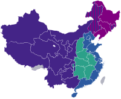

Economy of China
Shanghai, the financial center of China | |
| Currency | Renminbi (CNY, ¥) |
|---|---|
| Calendar year | |
Trade organizations | WTO, BRICS, SCO, APEC, RCEP, G20, G77 and others |
Country group | |
| Statistics | |
| Population | |
| GDP | |
| GDP rank | |
GDP growth |
|
GDP per capita | |
GDP per capita rank | |
GDP by sector |
|
GDP by component |
|
| 1.0% (2024)[4] | |
Population below poverty line | |
| |
Labor force | |
Labor force by occupation |
|
| Unemployment | |
Average gross salary | US$ 1,305 (urban non-private sector) US$ 747 (urban private sector) per month (2022) |
| US$ 1,002 (urban non-private sector) US$ 578 (urban private sector) per month (2022) | |
Final consumption expenditure | |
Gross capital formation | |
| Gross savings | |
| 10-Year Bond 2.831% (April 2023)[14] | |
Main industries |
|
| External | |
| Exports | $3.380 trillion (2023)[17] |
Export goods |
|
Main export partners |
|
| Imports | $2.557 trillion (2023)[17] |
Import goods |
|
Main import partners |
|
FDI stock | |
Gross external debt | |
| Public finances | |
| |
| |
| Revenues | ¥33.229 trillion[1] 26.5% of GDP (2023) |
| Expenses | ¥42.140 trillion[1] 33.6% of GDP (2023) |
All values, unless otherwise stated, are in US dollars. | |
.jpg){kind=link}
China's economy is a developing mixed socialist market economy, incorporating industrial policies and strategic five-year plans.[27] China is the world's second largest economy by nominal GDP, behind the United States, and the world's largest economy since 2017[28] when measured by purchasing power parity (PPP).[note 2] China accounted for 19% of the global economy in 2022 in PPP terms,[29] and around 18% in nominal terms in 2022.[29][30] The economy consists of public sector enterprises, state-owned enterprises (SOEs) and mixed-ownership enterprises, as well as a large domestic private sector and openness to foreign businesses in their system. According to the annual data of major economic indicators released by the National Bureau of Statistics since 1952, China's GDP grew by an average of 6.17% per year in the 26 years from 1953 to 1978. China implemented economic reform in 1978, and from 1979 to 2023, the country's GDP growth rate grew by an average of 8.93% per year in the 45 years since its implementing economic reform. According to preliminary data released by the authorities, China's GDP in 2023 was CN￥126.06 trillion (US$ 17.89 trillion[31]) with a real increase of 5.2% than the last year. [32]
China is the world's largest manufacturing economy and exporter of goods.[33] However, exports as a percentage of GDP has steadily dropped to just around 20%, reflecting its decreasing importance to the Chinese economy. Nevertheless, it remains the largest trading nation in the world and plays a prominent role in international trade.[34][35] Manufacturing has been transitioning toward high-tech industries such as electric vehicles, renewable energy, telecommunications and IT equipment, and services has also grown as a percentage of GDP. It is also the world's fastest-growing consumer market and second-largest importer of goods.[36] China is also the world's largest consumer of numerous commodities, and accounts for about half of global consumption of metals.[37] China is a net importer of services products.[38] China was the largest recipient of foreign direct investment (FDI) in the world as of 2020, receiving inflows of $163 billion.[39] but more recently, inbound FDI has fallen sharply to negative levels.[40][41] It has the second largest outbound FDI, at US$136.91 billion for 2019.[42]
China has the world's largest foreign-exchange reserves worth $3.1 trillion,[43] but if the foreign assets of China's state-owned commercial banks are included, the value of China's reserves rises to nearly $4 trillion.[44] China faced a mild economic slowdown during the 2007–2008 financial crisis and initiated a massive stimulus package, which helped to regain its economic growth. More recently, the imposition of the "3 Red Lines" on developer borrowing has sparked a real estate crisis and has raised questions on the accuracy of China's claims for the severity of this crisis.[45][46][47] China's economic growth is slowing down in the 2020s as it deals with a range of challenges from a rapidly aging population, higher unemployment and a property crisis.[48] China has the world's sixth largest gold reserve, with over 2,000 tonnes of gold.[49] It spends around 2.43% of GDP on advance research and development across various sectors of the economy.[50][51]
With 791 million workers, the Chinese labor force was the world's largest as of 2021, according to The World Factbook. In 2022, China was ranked the 11th most innovative country in the world, 3rd in Asia & Oceania region and 2nd for countries with a population of over 100 million. It is the only middle-income economy and the only newly industrialized economy in the top 30.[52][53] It also leads in several measures of global patent filings,[54][55] as well as research and scientific output.[56] It is also the world's largest high-technology exporter.[57] China has the second-largest financial assets in the world, valued at $17.9 trillion as of 2021.[58] As of 2022[update], China was second in the world in total number of billionaires.[59] and second in millionaires with 6.2 million. China has the largest middle-class in the world, with over 500 million people earning over RMB 120,000 a year.[60]
China has bilateral free trade agreements with many nations and is a member of the Regional Comprehensive Economic Partnership (RCEP).[61] China is widely regarded as the "powerhouse of manufacturing" or "the factory of the world".[62] Of the world's 500 largest companies, 142 are headquartered in China.[63] It has four of the world's top ten most competitive financial centers[64] and three of the world's ten largest stock exchanges (both by market capitalization and by trade volume).[65] Public social expenditure was around 10% of GDP in China.[66] Additionally, the public pension expenditure in China accounted for 5.2% of GDP.[67]
History
[edit]{kind=link}
Historically, China was one of the world's foremost economic powers for most of the two millennia from the 1st until the 19th century.[68][69][70][71][72] China accounted for around one-quarter of the global GDP until the late 1700s compared to India's one-third. China's share of global GDP was one-third in 1820 as the Industrial Revolution was beginning in Great Britain.[73][74][75][76] China's GDP in 1820 was six times as large as Britain's, the largest economy in Europe – and almost twenty times the GDP of the nascent United States.[77]
At the end of the Chinese Civil War, the economy was devastated.[78] As the defeated Nationalists fled to Taiwan, they stripped China of liquid assets including gold, silver, and the country's dollar reserves.[78] By the time the KMT was defeated, commerce had been destroyed, the national currency rendered valueless, and the economy was based on barter.[78]
The People's Republic of China's development from one of the poorest countries to one of the largest economies was the quickest of any country.[79]: 11 From 1949 until the Chinese economic reform in 1978, the economy was state-led with market activity remaining underground.[80] Economic reforms began under Deng Xiaoping.[80] China subsequently became the world's fastest-growing major economy, with growth rates averaging 10% over 30 years.[81][82] Many scholars consider the Chinese economic model as an example of authoritarian capitalism,[83][84] state capitalism[85] or party-state capitalism.[86][87]
China brought more people out of extreme poverty than any other country in history[88][89]—between 1978 and 2018, China reduced extreme poverty by 800 million.[90] Between 1981 and 2019, the percentage of the population living in extreme poverty decreased from 88.1% to 0.2%.[91] Its current account surplus increased by a factor of 53 between 1982 and 2021, from $5.67 billion to $317 billion.[92] During this time, China also became an industrial powerhouse, moving beyond initial successes in low-wage sectors like clothing and footwear to the increasingly sophisticated production of computers, pharmaceuticals, and automobiles. China's factories generated $3.7 trillion real manufacturing value added, more than the US, South Korea, Germany and the UK combined. China's manufacturing sector benefits from one of the world's largest domestic markets, immense manufacturing scale, and highly developed manufacturing supply chains.[93] It also has two (Shenzhen-Hong Kong-Guangzhou and Beijing in the 2nd and 3rd spots respectively) of the global top 5 science and technology clusters, which is more than any other country.[52][94]
China has sustained growth due to export relations, its manufacturing sector, and low-wage workers.[95] China's was the only major world economy to experience GDP growth in 2020, when its GDP increased by 2.3%.[96] However, it posted one of its worst economic performances in decades because of COVID-19 in 2022.[97] In 2023, IMF predicted China to continue being one of the fastest growing major economies.[98] China's economy is both a contributor to rising global greenhouse gas (GHG) emissions causing climate change and severely affected by its adverse impacts, although its per capita emissions are still much lower than developed economies such as the United States.[99]
Regional economies
[edit]{kind=link}
China's unequal transportation system, combined with important differences in the availability of natural and human resources and in industrial infrastructure, has produced significant variations in the regional economies of China.[100] The economic development of Shenzhen has caused the city to be referred to as the world's next Silicon Valley.[101][102]
Economic development has generally been more rapid in coastal provinces than in the interior and there are large disparities in per capita income between regions. The three wealthiest regions are the Yangtze Delta in East China; the Pearl River Delta in South China; and Jing-Jin-Ji region in North China. It is the rapid development of these areas that is expected to have the most significant effect on the Asian regional economy as a whole and Chinese government policy is designed to remove the obstacles to accelerated growth in these wealthier regions. By 2035, China's four cities (Shanghai, Beijing, Guangzhou and Shenzhen) are projected to be among the global top ten largest cities by nominal GDP according to a report by Oxford Economics.[103]
GDP by administrative division
[edit]| provinces | CN¥ | US$ | share (%) |
|---|---|---|---|
| China (mainland) |
141,020.72 | 19,700.70 | 100 |
| Guangdong | 13,911.86 | 2,119.67 | 10.67 |
| Jiangsu | 12,287.56 | 1,826.85 | 10.15 |
| Shandong | 8,743.51 | 1,299.94 | 7.22 |
| Zhejiang | 7,771.54 | 1,155.43 | 6.42 |
| Henan | 6,134.51 | 912.05 | 5.07 |
| Sichuan | 10,674.98 | 1,843.73 | 4.69 |
| Hubei | 5,373.49 | 798.90 | 4.44 |
| Fujian | 5,310.99 | 789.61 | 4.39 |
| Hunan | 4,867.04 | 723.61 | 4.02 |
| Anhui | 4,504.50 | 669.70 | 3.72 |
| Shanghai | 4,465.28 | 663.87 | 3.69 |
| Hebei | 4,237.04 | 629.94 | 3.50 |
| Beijing | 4,161.10 | 618.65 | 3.44 |
| Shaanxi | 3,277.27 | 487.25 | 2.71 |
| Jiangxi | 3,207.47 | 476.87 | 2.65 |
| Chongqing | 2,912.90 | 433.07 | 2.41 |
| Liaoning | 2,897.51 | 430.79 | 2.39 |
| Yunnan | 2,895.42 | 430.48 | 2.39 |
| Guangxi | 2,630.09 | 391.03 | 2.17 |
| Shanxi | 2,564.26 | 381.24 | 2.12 |
| Inner Mongolia | 2,315.87 | 344.31 | 1.91 |
| Guizhou | 2,016.46 | 299.80 | 1.67 |
| Xinjiang | 1,774.13 | 263.77 | 1.47 |
| Tianjin | 1,631.13 | 242.51 | 1.35 |
| Heilongjiang | 1,590.10 | 236.41 | 1.31 |
| Jilin | 1,307.02 | 194.32 | 1.08 |
| Gansu | 1,120.16 | 166.54 | 0.93 |
| Hainan | 681.82 | 101.37 | 0.56 |
| Ningxia | 506.96 | 75.37 | 0.42 |
| Qinghai | 361.01 | 53.67 | 0.30 |
| Tibet | 213.26 | 31.71 | 0.18 |
Hong Kong and Macau
[edit]In accordance with the one country, two systems policy, the economies of the former British colony of Hong Kong and Portuguese colony of Macau formally preserve a capitalist system separate from mainland China.[104][105]
Regional development
[edit]|  | ||
| The East Coast (w/ existing development programmes) | ||
| "Rise of Central China" | ||
| "Revitalize Northeast China" | ||
| "China Western Development" | ||
{kind=link}
These strategies are aimed at the relatively poorer regions in China in an attempt to prevent widening inequalities:
- China Western Development, designed to increase the economic situation of the western provinces through investment and development of natural resources.
- Revitalize Northeast China, to rejuvenate the industrial bases in Northeast China. It covers the three provinces of Heilongjiang, Jilin, and Liaoning, as well as the five eastern prefectures of Inner Mongolia.
- Rise of Central China Plan, to accelerate the development of its central regions. It covers six provinces: Shanxi, Henan, Anhui, Hubei, Hunan, and Jiangxi.
- Third Front, focused on the southwestern provinces
Government
[edit]{kind=link}
The Chinese Communist Party (CCP) officially refers to China's economic system as the socialist market economy. To guide economic development, the Chinese central government adopts five-year plans that detail its economic priorities and essential policies. The fourteenth five-year plan (2021–2025) is currently being implemented, placing an emphasis on consumption-driven growth and technological self-sufficiency while China transitions from being an upper middle-income economy to a high-income economy.[107]
The public sector plays a central role in China's economy.[108] This development is also in line with the planning goals of the Chinese central government to achieve the Two Centenaries, namely the material goal of China becoming a moderately prosperous society in all respects by 2021 and the modernization goal of China becoming a "strong, democratic, civilized, harmonious and modern socialist country" by 2049, the 100th anniversary of the founding of the People's Republic.[109] China retains state control over the commanding heights of the economy in key industries like infrastructure, telecommunications, and finance despite significant marketization of the economy since reform and opening up.[110]: 20 Specific mechanisms implementing government control of the commanding heights of the economy include public property rights, pervasive administrative involvement, and CCP supervision of senior managers.[110]: 20
The state is more likely to intervene in areas where the prices of goods and services are socially and politically sensitive.[111]: 105 For example, China's government intervenes more actively in the commercial banking sector than in private equity, where significantly fewer households participate.[111]: 100 The state's involvement in the allocation of finance, contracts, and resources facilitates Chinese government efforts to minimize the effects of market volatility.[112]: 3
,_2018.jpg){kind=link}
{kind=link}
State-owned enterprises
[edit]China's SOEs perform important functions that benefit the state.[113] Academic Wendy Leutert writes, "They contribute to central and local governments revenues through dividends and taxes, support urban employment, keep key input prices low, channel capital towards targeted industries and technologies, support sub-national redistribution to poorer interior and western provinces, and aid the state's response to natural disasters, financial crises and social instability."[113]
Almost 867,000 enterprises in China have a degree of state ownership, according to Franklin Allen of Imperial College London.[114] As of 2017, China has more SOEs than any other country, and the most SOEs among large national companies.[113] State-owned enterprises accounted for over 60% of China's market capitalization in 2019[115] and generated 40% of China's GDP of US$15.98 trillion dollars (101.36 trillion yuan) in 2020, with domestic and foreign private businesses and investment accounting for the remaining 60%.[116][117] As of the end of 2019, the total assets of all China's SOEs, including those operating in the financial sector, reached US$58.97 trillion In 2015.[118] Ninety-one (91) of these SOEs belong to the 2020 Fortune Global 500 companies.[119] As of 2023[update], private firms only represent 37% of the country's top-100 listed firms, according to the Peterson Institute for International Economics.[114]
Disputes over economic data
[edit]There exists disputes over reliability of official economic data. Foreign and some Chinese sources have claimed that official Chinese government statistics overstate China's economic growth.[120] However, several Western academics and institutions have stated that China's economic growth is higher than indicated by official figures.[121] Others, such as the Economist Intelligence Unit, state that while there's evidence China's GDP data is "smoothed", they believe that China's nominal and real GDP data are broadly accurate.[122] Still others, state that reported GDP growth is irreconcilable with data coming out of China.[123] In 2024, the United States Department of Agriculture stopped relying on official Chinese government data over reliability concerns.[124] According to 2007 documents obtained by WikiLeaks, Liaoning Party Secretary and future Premier Li Keqiang said he is far from confident in the country's GDP estimates, calling them "man-made" and unreliable and that data releases, especially the GDP numbers, should be used "for reference only".[125] In its place, he developed the Li Keqiang index is an alternative measurement of Chinese economic performance that uses three variables he preferred.[126]
Chinese provinces and cities have long been suspected of cooking their numbers, with the focus on local government officials, whose performance are often assessed based on how well their respective economies have performed.[127] Local governments have come under increased scrutiny over the last few years over economic data, with CCP general secretary Xi Jinping stating that economic data forgery "not only hurt our judgment of the economic situation, but also seriously undermined the Communist Party’s ideas and truth-seeking style".[120][128]
According to a 2019 research paper published by the Brookings Institution adjusting the historical GDP time series using value-added tax data, which the authors said are "highly resistant to fraud and tampering",[129][130] China's economic growth may have been overstated by 1.7 percent each year between 2008 and 2016, meaning that the government may have been overstating the size of the Chinese economy by 12–16 percent in 2016.[130][131]
Several Western academics and institutions have supported the claim that China's economy is likely to be underestimated.[132][133][134][121][135][136][137] A paper by the US-based National Bureau of Economic Research claimed that China's economic growth may be higher than what is reported by official statistics.[138] An article by Hunter Clarka, Maxim Pinkovskiya and Xavier Sala-i-Martin published by the Elsevier Science Direct in 2018 employs an innovative method of satellite-recorded nighttime lights, which the authors claim to be a best-unbiased predictor of the economic growth in Chinese cities. The results suggest that the Chinese economic growth rate is higher than the official reported data.[132]
Satellite measurements of light pollution are used by some analysts to model Chinese economic growth and suggest growth rate numbers in Chinese official data are more reliable, though are likely to be smoothed.[139] According to an article by the Federal Reserve Bank of St. Louis, China's official statistics are of a high quality compared to other developing, middle-income and low-income countries. In 2016, China was at the 83rd percentile of middle and low-income countries, up from the 38th percentile in 2004.[140] A study by the Federal Reserve Bank of San Francisco found that China's official GDP statistics are "significantly and positively correlated" with externally verifiable measures of economic activity such as import and export data from China's trade partners, suggesting that China's economic growth was no slower than the official figures indicated.[121]
The study by Daniel H. Rosen and Beibei Bao, published by the Center for Strategic and International Studies in 2015, showed that GDP in 2008 was actually 13–16 percent bigger than the official data, while 2013 GDP was accurately at $10.5 trillion rather than the official figure at $9.5 trillion.[135] According to a research conducted by Arvind Subramanian, a former economist at the International Money Fund (IMF) and a senior fellow at the Peterson Institute for International Economics, the size of the Chinese economy by Purchasing Power Parity in 2010 was about $14.8 trillion rather than an official estimate at $10.1 trillion by IMF, meaning that China's GDP was underestimated by 47 percent.[134]
National debt
[edit]In 2022, China's total government debt stood at approximately CN¥ 94 trillion (US$ 14 trillion), equivalent to about 77.1% of GDP.[141] In 2014, many analysts expressed concern over the overall size of China's government debt.[142][143][144][145] At the end of 2014, the International Monetary Fund reported that China's general government gross debt-to-GDP ratio was 41.44 percent.[146][147] In 2015, a report by the International Monetary Fund concluded that China's public debt is relatively low "and on a stable path in all standard stress tests except for the scenario with contingent liability shocks", such as "a large-scale bank recapitalization or financial system bailout to deal, for example, with a potential rise in NPLs from deleveraging".[148]
Chinese authorities have dismissed analysts' worries, insisting "the country still has room to increase government debt."[149] Former Fed Chairman Ben Bernanke, earlier in 2016, commented that "the ... debt pile facing China [is] an 'internal' problem, given the majority of the borrowings was issued in local currency.[150] A 2019 survey by the OECD found that China's corporate debt is higher than other major countries.[151]
"Shadow banking" has risen in China, posing risks to the financial system.[152][153] Off the books debt is a grey area, but estimates place the amount for local governments alone as high as $9 trillion[154] or 63 trillion yuan, up from estimates of around 30 trillion yuan in 2020.[155]
Regulatory environment and government revenues
[edit]Though China's economy has expanded rapidly, its regulatory environment has not kept pace. Since Deng Xiaoping's open market reforms, the growth of new businesses has outpaced the government's ability to regulate them. This has created a situation where businesses, faced with mounting competition and poor oversight, take drastic measures to increase profit margins, often at the expense of consumer safety. This issue became more prominent in 2007, with a number of restrictions being placed on problematic Chinese exports by the United States.[156]
Anti-monopoly and competition law
[edit]The Chinese technology sector has been characterized as being dominated by few, larger entities including Ant Group and Tencent.[157] There have been attempts by the Xi Jinping Administration to enforce economic competition rules, and probes into Alibaba and Tencent have been launched by Chinese economic regulators.[158]
The crackdown on tech giants and internet companies during the 2020–2021 Xi Jinping Administration reform spree were followed with calls by the Politburo against monopolistic practices by commercial retail giants like Alibaba.[159]
In March 2021, Xi stated China would strengthen its antitrust enforcement in an effort to advance what he described as the healthy and sustainable development of the platform economy.[160]: 100 Two major institutional changes resulted.[160]: 100 In November 2021, China upgraded the bureaucratic status of the State Administration for Market Regulation's antitrust bureau.[160]: 100–101 In June 2022, it made major amendments to the Anti-Monopoly Law, including explicit language focused on regulation of the platform economy.[160]: 101
Data
[edit]This section needs to be updated. (December 2023) |
The following table shows the main economic indicators in 1980–2022 (with IMF staff estimates in 2023–2028). Inflation below 5% is in green.[141]
| Year | GDP
(in Bil. US$PPP) |
GDP per capita
(in US$ PPP) |
GDP
(in Bil. US$nominal) |
GDP per capita
(in US$ nominal) |
GDP growth
(real) |
Inflation rate
(in Percent) |
Unemployment
(in Percent) |
Government debt
(in % of GDP) |
|---|---|---|---|---|---|---|---|---|
| 1980 | 302.8 | 306.7 | 303.0 | 307.0 | n/a | 4.9% | n/a | |
| 1981 | n/a | |||||||
| 1982 | n/a | |||||||
| 1983 | n/a | |||||||
| 1984 | n/a | |||||||
| 1985 | n/a | |||||||
| 1986 | n/a | |||||||
| 1987 | n/a | |||||||
| 1988 | n/a | |||||||
| 1989 | n/a | |||||||
| 1990 | n/a | |||||||
| 1991 | n/a | |||||||
| 1992 | n/a | |||||||
| 1993 | n/a | |||||||
| 1994 | n/a | |||||||
| 1995 | 21.6% | |||||||
| 1996 | 703.1 | |||||||
| 1997 | ||||||||
| 1998 | ||||||||
| 1999 | ||||||||
| 2000 | ||||||||
| 2001 | ||||||||
| 2002 | ||||||||
| 2003 | ||||||||
| 2004 | ||||||||
| 2005 | ||||||||
| 2006 | ||||||||
| 2007 | ||||||||
| 2008 | ||||||||
| 2009 | ||||||||
| 2010 | ||||||||
| 2011 | ||||||||
| 2012 | ||||||||
| 2013 | ||||||||
| 2014 | ||||||||
| 2015 | ||||||||
| 2016 | ||||||||
| 2017 | ||||||||
| 2018 | ||||||||
| 2019 | ||||||||
| 2020 | ||||||||
| 2021 | ||||||||
| 2022 | ||||||||
| 2023 | ||||||||
| 2024 | ||||||||
| 2025 | ||||||||
| 2026 | ||||||||
| 2027 | ||||||||
| 2028 |
Inflation
[edit]{kind=link}
Pork is an important part of the Chinese economy with a per capita consumption of 90 grams per day. The worldwide rise in the price of animal feed associated with increased production of ethanol from corn resulted in steep rises in pork prices in China in 2007. Increased cost of production interacted badly with increased demand resulting from rapidly rising wages. The state responded by subsidizing pork prices for students and the urban poor and called for increased production. Release of pork from the nation's strategic pork reserve was considered.[161]
Investment cycles
[edit].jpg){kind=link}
Chinese investment has always been highly cyclical.[162]
In China, the majority of investment is carried out by entities that are at least partially state-owned. Most of these are under the control of local governments. Thus, booms are primarily the result of perverse incentives at the local-government level.[163] Unlike entrepreneurs in a free-enterprise economy, Chinese local officials are motivated primarily by political considerations. As their performance evaluations are based, to a large extent, on GDP growth within their jurisdictions, they have a strong incentive to promote large-scale investment projects.[164][165]
A typical cycle begins with a relaxation of central government credit and industrial policy. This allows local governments to push investment aggressively, both through state-sector entities they control directly and by offering investment-promotion incentives to private investors and enterprises outside their jurisdictions.[166] The resulting boom puts upward pressure on prices and may also result in shortages of key inputs such as coal and electricity (as was the case in 2003).[167] Once inflation has risen to a level at which it begins to threaten social stability, the central government will intervene by tightening enforcement of industrial and credit policy. Projects that went ahead without required approvals will be halted. Bank lending to particular types of investors will be restricted. Credit then becomes tight and investment growth begins to decline.[168]
Financial and banking system
[edit]{kind=link}
China has the world's largest total banking sector assets of around $45.838 trillion (309.41 trillion CNY) with $42.063 trillion in total deposits and other liabilities.[169] Most of China's financial institutions are state-owned and governed.[170] The chief instruments of financial and fiscal control are the People's Bank of China (PBC) and the Ministry of Finance, both under the authority of the State Council. The People's Bank of China replaced the Central Bank of China in 1950 and gradually took over private banks. It fulfills many of the functions of other central and commercial banks. It issues the currency, controls circulation, and plays an important role in disbursing budgetary expenditures. Additionally, it administers the accounts, payments, and receipts of government organizations and other bodies, which enables it to exert thorough supervision over their financial and general performances in consideration of the government's economic plans. The PBC is also responsible for international trade and other overseas transactions. Remittances by overseas Chinese are managed by the Bank of China (BOC), which has a number of branch offices in several countries.[citation needed]
Other financial institutions that are crucial, include the China Development Bank (CDB), which funds economic development and directs foreign investment; the Agricultural Bank of China (ABC), which provides for the agricultural sector; the China Construction Bank (CCB), which is responsible for capitalizing a portion of overall investment and for providing capital funds for certain industrial and construction enterprises; and the Industrial and Commercial Bank of China (ICBC), which conducts ordinary commercial transactions and acts as a savings bank for the public.[citation needed] China initiated the founding of the Asian Infrastructure Investment Bank in 2015 and the Silk Road Fund in 2014, an investment fund of the Chinese government to foster increased investment and provide financial supports in countries along the One Belt, One Road.[171]
{kind=link}
China's economic reforms greatly increased the economic role of the banking system. In theory any enterprises or individuals can go to the banks to obtain loans outside the state plan, in practice, 75% of state bank loans go to State Owned Enterprises. (SOEs)[172] Even though nearly all investment capital was previously provided on a grant basis according to the state plan, policy has since the start of the reform shifted to a loan basis through the various state-directed financial institutions. It is estimated that, as of 2011, 14 trillion Yuan in loans was outstanding to local governments. Much of that total is believed by outside observers to be nonperforming.[173] Increasing amounts of funds are made available through the banks for economic and commercial purposes. Foreign sources of capital have also increased. China has received loans from the World Bank and several United Nations programs, as well as from countries (particularly Japan) and, to a lesser extent, commercial banks. Hong Kong has been a major conduit of this investment, as well as a source itself. On 23 February 2012, the PBC evinced its inclination to liberalize its capital markets when it circulated a telling ten-year timetable.[174] Following on the heels of this development, Shenzhen banks were able to launch cross-border yuan remittances for individuals, a significant shift in the PBC's capital control strictures since Chinese nationals had been previously barred from transferring their yuan to overseas account.[175]
China has four of the world's top ten most competitive financial centers (Shanghai, Hong Kong, Beijing, and Shenzhen), more than any other country.[64] China has three of the world's ten largest stock exchanges (Shanghai, Hong Kong and Shenzhen), both by market capitalization and by trade volume.[65][176] As of 12 October 2020, the total market capitalization of mainland Chinese stock markets, consisting of the Shanghai Stock Exchange and Shenzhen Stock Exchange, topped US$10 trillion, excluding the Hong Kong Stock Exchange, with about US$5.9 trillion.[177]
As of the end of June 2020, foreign investors had bought a total of US$440 billion in Chinese stocks, representing about 2.9% of the total value, and indicating that foreign investors scooped up a total of US$156.6 billion in the stocks just in the first half of 2020.[178] The total value of China's bond market topped US$15.4 trillion, ranked above that of Japan and the U.K., and second only to that of the U.S. with US$40 trillion, as of the beginning of September 2020.[179] As of the end of September 2020, foreign holdings of Chinese bonds reached US$388 billion, or 2.5%, of the total value, notwithstanding an increase by 44.66% year on year.[180]
Stock markets
[edit]{kind=link}
As of at least 2024, China has the second largest equity markets and futures markets in the world, as well as the third largest bond market.[181]: 153
China's stock market exchanges include the Beijing Stock Exchange, the Shanghai Stock Exchange (including the STAR Market), the Shenzhen Stock Exchange, and the Hong Kong Stock Exchange. China's stock market is relatively underdeveloped compared to other aspects of its economy.[182]: 148–150
To be listed on China's stock exchange, companies must demonstrate good financial standing (including sustained profitability), solid corporate governance (for example, with a board of independent directors, supervisory board, auditing, and no history of misreporting or fraud) and have a market capitalization equivalent to at least US$4 million.[96]: 271–272
The government regulates initial public offerings, encouraging them when the market is high in an effort to cool down prices and prohibiting them when the market is low.[111]: 109
When the stock markets re-opened in the PRC period in 1990, most of the listed companies were state-owned enterprises; this was part of an experiment in subjecting SOEs to market discipline.[182]: 152–153 The Shanghai and Shenzhen stock exchanges were under municipal control and termed "experimental points" until 1997.[110]: 102–103 In 1997, the central government brought the exchanges under central government control and affirmed that the exchanges had a legitimate role in the socialist market economy.[110]: 102
In 2015, a stock market plunge in China eliminated $2 trillion of global stock market value.[182]: 147
Currency system
[edit]{kind=link}
The renminbi ("people's currency") is the currency of China, denominated as the yuan, subdivided into 10 jiao or 100 fen. The renminbi is issued by the People's Bank of China, the monetary authority of China. The ISO 4217 abbreviation is CNY, although also commonly abbreviated as "RMB". As of 2005, the yuan was generally considered by outside observers to be undervalued by about 30–40%.[183][184] However, in 2017, the IMF stated that the yuan was correctly valued.[185]
The renminbi is held in a floating exchange-rate system managed primarily against the US dollar. On 21 July 2005, China revalued its currency by 2.1% against the US dollar and, since then has moved to an exchange rate system that references a basket of currencies and has allowed the renminbi to fluctuate at a daily rate of up to half a percent.[citation needed]
There is a complex relationship between China's balance of trade, inflation, measured by the consumer price index and the value of its currency. Despite allowing the value of the yuan to "float", China's central bank has decisive ability to control its value with relationship to other currencies. Inflation in 2007, reflecting sharply rising prices for meat and fuel, is probably related to the worldwide rise in commodities used as animal feed or as fuel. Thus rapid rises in the value of the yuan permitted in December 2007 are possibly related to efforts to mitigate inflation by permitting the renminbi to be worth more.[186] An article published in International Review of Economics & Finance in 2010 by Mete Feridun (University of Greenwich Business School) and his colleagues provide empirical evidence that financial development fosters economic growth in China.[187]
During the week of 10 August 2015, against the background of a slowing Chinese economy and appreciation of the U.S. dollar, the People's Bank of China devalued the renminbi by about 5%.[188] The devaluation was accomplished by pegging the official rate to closing market rates. A market-based "representative" exchange rate against the U.S. dollar is one of the requirements for designation of a currency as one with Special Drawing Rights (SDR) by the International Monetary Fund (IMF), one of China's goals.[189] Since the late-2000s, China has sought to internationalize the renminbi.[190] As of 2013, the RMB is the 8th most widely traded currency in the world.[191] In November 2015 in advance of G-20 and IMF meetings, IMF director Christine Lagarde announced her support for adding the yuan to the SDR currency basket. The announcement gave 'green-light' to official approval at 30 November IMF meeting.[192] The internationalization of the Chinese economy continues to affect the standardized economic forecast officially launched in China by the Purchasing Managers Index in 2005.
Sectors
[edit]According to Fortune Global, of the world's 500 largest companies, 135 are headquartered in China.[193] As of 2023, mainland China and Hong Kong were home to 324 largest listed companies measured by revenue in the Fortune Global 2000, ranking second globally.[194] China is also home to more than two hundred privately held technology startups (tech unicorns), each with a valuation of over $1 billion, the highest number in the world.[195]
Agriculture
[edit]This section needs additional citations for verification. (January 2021) |
{kind=link}
China is the world's largest producer and consumer of agricultural products – and some 300 million Chinese farm workers are in the industry, mostly laboring on pieces of land about the size of U.S. farms. Virtually all arable land is used for food crops. China is the world's largest producer of rice and is among the principal sources of wheat, corn (maize), tobacco, soybeans, potatoes, sorghum, peanuts, tea, millet, barley, oilseed, pork, and fish. Major non-food crops, including cotton, other fibers, and oilseeds, furnish China with a small proportion of its foreign trade revenue. Agricultural exports, such as vegetables and fruits, fish and shellfish, grain and meat products, are exported to Hong Kong. Yields are high because of intensive cultivation, for example, China's cropland area is only 75% of the U.S. total, but China still produces about 30% more crops and livestock than the United States. China hopes to further increase agricultural production through improved plant stocks, fertilizers, and technology.
According to the government statistics issued in 2005,[196] after a drop in the yield of farm crops in 2000, output has been increasing annually.
{kind=link}
According to the United Nations World Food Programme, in 2022, China fed eighteen percent of the world's population with only seven percent of the world's arable land.[197]
Animal husbandry constitutes the second most important component of agricultural production. China is the world's leading producer of pigs, chickens, and eggs, and it also has sizable herds of sheep and cattle. Since the mid-1970s, greater emphasis has been placed on increasing the livestock output. China has a long tradition of ocean and freshwater fishing and of aquaculture. Pond raising has always been important and has been increasingly emphasized to supplement coastal and inland fisheries threatened by overfishing and to provide such valuable export commodities as prawns. China is also unmatched in the size and reach of its fishing armada with anywhere from 200,000 to 800,000 boats, some as far afield as Argentina. Fueled primarily by government subsidies, its growth and activities have largely gone unchecked.[198]
{kind=link}
Environmental problems such as floods, drought, and erosion pose serious threats to farming in many parts of the country. The wholesale destruction of forests gave way to an energetic reforestation program that proved inadequate, and forest resources are still fairly meagre.[199] The principal forests are found in the Qin Mountains and the central mountains and on the Yunnan–Guizhou Plateau. Because they are inaccessible, the Qinling forests are not worked extensively, and much of the country's timber comes from Heilongjiang, Jilin, Sichuan, and Yunnan.
Western China, comprising Tibet, Xinjiang, and Qinghai, has little agricultural significance except for areas of floriculture and cattle raising. Rice, China's most important crop, is dominant in the southern provinces and many of the farms here yield two harvests a year. In the north, wheat is of the greatest importance, while in central China wheat and rice vie with each other for the top place. Millet and kaoliang (a variety of grain sorghum) are grown mainly in the northeast and some central provinces, which, together with some northern areas, also provide considerable quantities of barley. Most of the soybean crop is derived from the north and the northeast; corn (maize) is grown in the center and the north, while tea comes mainly from the warm and humid hilly areas of the south. Cotton is grown extensively in the central provinces, but it is also found to a lesser extent in the southeast and in the north. Tobacco comes from the center and parts of the south. Other important crops are potatoes, sugar beets, and oilseeds.
{kind=link}
In the past decade, the government has been encouraging agricultural mechanization and land consolidation to raise yields and compensate for the loss of rural workers who have migrated to the cities.[200] According to statistics by the UN Food and Agriculture Organization, the annual growth rate of agricultural mechanization in China is 6.4%. By 2014, the integrated mechanization rate had risen to nearly 60%, with the rate for wheat surpassing 90% and that for maize approaching 80%.[201] In addition to standard agricultural equipment like tractors, China's agriculture cooperatives have begun using high-tech equipment, including unmanned aerial vehicles, which are used to spay crops with pesticides.[202] Good progress has been made in increasing water conservancy, and about half the cultivated land is under irrigation.
In the late 1970s and early 1980s, economic reforms were introduced. First of all this began with the shift of farming work to a system of household responsibility and a phasing out of collectivized agriculture. Later this expanded to include a gradual liberalization of price controls; fiscal decentralization; massive privatization of state enterprises, thereby allowing a wide variety of private enterprises in the services and light manufacturing; the foundation of a diversified banking system (but with large amounts of state control); the development of a stock market; and the opening of the economy to increased foreign trade and foreign investment.
Housing and construction
[edit]In 2010, China became the world's largest market for construction.[181]: 112 It has remained the world's largest through at least 2024.[181]: 112
The real estate industry is about 20% of the Chinese economy.[203] As of 2023, real property accounts for 60% of Chinese household assets.[182]: 161 Also as of 2023, China has the highest rate of home ownership in the world.[182]: 170 90% of urban households own their home.[182]: 170
Compared to other nations, investing in stock markets and other assets is harder due to currency controls within the country. As a result, many Chinese citizens own multiple properties, as they are one of the few ways in which it is comparatively easy to grow and preserve wealth. Due to this, many economists have speculated about a property bubble within the Chinese economy[204] On 16 July 2020, the Wall Street Journal reported that the housing market within the Chinese economy had grown to US$52 trillion, eclipsing the US 2008 housing market before the Financial Crisis.[205]
Despite the possibility of a housing bubble, many people still choose to invest their assets in real estate market. On 19 December 2021, according to a report by McKinsey Global Institute, China's net worth reached $120 trillion in 2020 to overtake the U.S.'s $89 trillion as a red-hot real estate market drove up property value.[206]
Energy and mineral resources
[edit]{kind=link}
- Production: 6.5 trillion kWh (2017)[207]
- Consumption: 7.7620 trillion kWh (2020)[5]
- Exports: 21.8 billion kwh (2020)[5]
- Imports: 6.2 billion kwh (2015)[5]
Electricity – production by source (2023):[208]
- Coal: 60.5%
- Hydro: 13.2%
- Wind: 9.4%
- Solar: 6.2%
- Nuclear: 4.6%
- Natural gas: 3.3%
- Bioenergy: 2.2%
Oil:
- Production: 3,527,000 bbl/d (560,700 m3/d) (2022)
- Consumption: 6,534,000 bbl/d (1,038,800 m3/d) (2005) and expected 9,300,000 bbl/d (1,480,000 m3/d) in 2030
- Exports: 443,300 bbl/d (70,480 m3/d) (2005)
- Imports: 10,170,000 bbl/d (1,617,000 m3/d) (2022) [209]
- Net imports: 2,740,000 barrels per day (436,000 m3/d) (2005)
- Proved reserves: 16.3 Gbbl (2.59×109 m3) (1 January 2006)
Natural gas:
- Production: 47.88 km3 (2005 est.)
- Consumption: 44.93 km3 (2005 est.)
- Exports: 2.944 km3 (2005)
- Imports: 0 m3 (2005)
- Proved reserves: 1,448 km3 (1 January 2006 est.)
China has natural resources with an estimated worth of $23 trillion, 90% of which are coal and rare earth metals.[210] Over the years, large subsidies were built into the price structure of certain commodities and these subsidies grew substantially in the late 1970s and 1980s.[211] Since 1980, China's energy production has grown dramatically, as has the proportion allocated to domestic consumption. Some 80 percent of all power is generated from fossil fuel at thermal plants, with about 17 percent at hydroelectric installations; only about two percent is from nuclear energy, mainly from plants located in Guangdong and Zhejiang.[212] Though China has rich overall energy potential, most have yet to be developed. In addition, the geographical distribution of energy puts most of these resources relatively far from their major industrial users. The northeast is rich in coal and oil, the central part of north China has abundant coal, and the southwest has immense hydroelectric potential. But the industrialized regions around Guangzhou and the Lower Yangtze region around Shanghai have too little energy, while there is relatively little heavy industry located near major energy resource areas other than in the southern part of the northeast.
Due in large part to environmental concerns, China has wanted to shift China's current energy mix from a heavy reliance on coal, which accounts for 70–75% of China's energy, toward greater reliance on oil, natural gas, renewable energy, and nuclear power. China has closed thousands of coal mines over the past five to ten years to cut overproduction. According to Chinese statistics, this has reduced coal production by over 25%. As of at least 2023, solar power has become cheaper than coal-fired power in China.[111]: 167
Since 1993, China has been a net importer of oil, a large portion of which comes from the Middle East. Imported oil accounts for 20% of the processed crude in China.[citation needed] Net imports are expected to rise to 3.5 million barrels (560,000 m3) per day by 2010.[citation needed] China is interested in diversifying the sources of its oil imports and has invested in oil fields around the world. China is developing oil imports from Central Asia and has invested in Kazakhstani oil fields.[213] Beijing also plans to increase China's natural gas production, which currently accounts for only 3% of China's total energy consumption and incorporated a natural gas strategy in its 10th Five-Year Plan (2001–2005), with the goal of expanding gas use from a 2% share of total energy production to 4% by 2005 (gas accounts for 25% of U.S. energy production).[citation needed]
Since the early 2000s, China's clean energy sector has rapidly developed.[214]: 23 This growth has enabled renewable energy to have an important role in China's international cooperation, including South-South cooperation in which China is a major source of clean energy technology transfer to other developing countries.[214]: 4, 23 As of at least 2023, China is the world's leading producer of solar panels and wind turbines.[111]: 167
The 11th Five-Year Program (2006–10), announced in 2005 and approved by the National People's Congress in March 2006, called for greater energy conservation measures, including development of renewable energy sources and increased attention to environmental protection. Guidelines called for a 20% reduction in energy consumption per unit of GDP by 2010. Moving away from coal towards cleaner energy sources including oil, natural gas, renewable energy, and nuclear power is an important component of China's development program. Beijing also intends to continue to improve energy efficiency and promote the use of clean coal technology. China has abundant hydroelectric resources; the Three Gorges Dam, for example, will have a total capacity of 18 gigawatts when fully on-line (projected for 2009). In addition, the share of electricity generated by nuclear power is projected to grow from 1% in 2000 to 5% in 2030. China's renewable energy law, which went into effect in 2006, calls for 10% of its energy to come from renewable energy sources by 2020.[citation needed]
By 2010, rapidly rising wages and a general increase in the standard of living had put increased energy use on a collision course with the need to reduce carbon emissions in order to control global warming.[99] There were diligent efforts to increase energy efficiency and increase use of renewable sources; over 1,000 inefficient power plants had been closed, but projections continued to show a dramatic rise in carbon emissions from burning fossil fuels.[215]
{kind=link}
While not the largest source of historical cumulative emissions, today China accounts for one quarter of global greenhouse gas emissions.[216] On a per capita basis, China's emissions in 2019 (9 tonnes CO2-equivalent [tCO2e] per year) surpass those of the European Union (7.6 tCO2e) but remain slightly below the Organisation for Economic Co-operation and Development (OECD) average (10.7 tCO2e) and well below the United States average (17.6 tCO2e). However, the carbon intensity of China's GDP—the amount of carbon used to generate a unit of output—remains relatively high.[99] To avoid the long-term socioeconomic cost[217] of environmental pollution in China,[218][219] it has been suggested by Nicholas Stern and Fergus Green of the Grantham Research Institute on Climate Change and the Environment that the economy of China be shifted to more advanced industrial development with low carbon dioxide emissions and better allocation of national resources to innovation and R&D for sustainable economic growth in order to reduce the impact of China's heavy industry. This is in accord with the planning goals of the central government.[220] Contrary to the publicized goals, China is building a large number of coal fired power plants and it carbon emissions could further increase.[221][222]
Mining
[edit]China's rapid industrialization requires imports of minerals from abroad. In particular, iron ore imports from Australia and the United States have soared in the early 2000s as steel production rapidly outstripped domestic iron ore production. China has become increasingly active in several African countries to mine the reserves it requires for economic growth, particularly in countries such as the Democratic Republic of the Congo (DRC) and Gabon. As of at least 2024, Chinese companies account for 70% of cobalt mining in the DRC and are the world leaders overall in the production of cobalt.[112]: 49
The major areas of production in 2004 were coal (nearly two billion tons), iron ore (310 million tons), crude petroleum (175 million tons), natural gas (41 million cubic meters), antimony ore (110,000 tons), tin concentrates (110,000 tons), nickel ore (64,000 tons), tungsten concentrates (67,000 tons), unrefined salt (37 million tons), vanadium (40,000 tons), and molybdenum ore (29,000 tons). In order of magnitude, produced minerals were bauxite, gypsum, barite, magnesite, talc and related minerals, manganese ore, fluorspar, and zinc. In addition, China produced 2,450 tons of silver and 215 tons of gold in 2004. The mining sector accounted for less than 0.9% of total employment in 2002 but produced about 5.3% of total industrial production.
In 2019, the country was the world's largest producer of gold;[223] 3rd largest world producer of copper;[224] 3rd worldwide producer of silver;[225] the world's largest producer of sulfur;[226] the world's largest producer of phosphate;[227] the world's largest producer of molybdenum;[228] the world's largest producer of lead;[229] largest world producer of zinc;[230] the world's largest producer of vanadium;[231] largest world producer of tin;[232] the world's largest producer of titanium;[233] the world's largest producer of antimony;[234] 2nd largest worldwide producer of bauxite;[235] 3rd largest world producer of iron ore;[236] 6th largest world producer of manganese;[237] 7th largest world producer of nickel;[238] 10th largest world producer of cobalt;[239] in addition to being the world's largest producer of salt.[240] It was the world's 8th largest producer of uranium in 2018.[241] Furthermore, it is the largest world producer of jade and one of the world producers of topaz, tourmaline, peridot and diamond.
Until the end of 2019, a total of 173 types of minerals have been discovered in China, including 13 types of energy materials, 59 metals, 95 types of non-metallic minerals and six types of water and gases. In 2019, the newly discovered geological reserves of oil were 1.12 billion tonnes, of which, 160 million tonnes were proven technically recoverable reserves. The newly discovered geological reserves of shale gas were 764.42 billion cubic meters, of which, 183.84 billion cubic meters were proven reserves. With respect to non-oil and gas minerals, the evaluation states that China has great prospecting potential for 24 major minerals, including coal, iron ore, manganese, chromite, copper, lead, zinc, bauxite, tungsten, tin, molybdenum, antimony, nickel, gold, silver, lithium, pyrites, phosphate rock, potash, magnesite, fluorite, boron and barite.[242]
Hydroelectric resources
[edit]{kind=link}
China has an abundant potential for hydroelectric power production due to its considerable river network and mountainous terrain. Most of the total hydroelectric capacity is situated in the southwest of the country, where coal supplies are poor but demand for energy is rising swiftly. The potential in the northeast is fairly small, but it was there that the first hydroelectric stations were built – by the Japanese during its occupation of Manchuria.[243]
Thirteen years in construction at a cost of $24 billion, the immense Three Gorges Dam across the Yangtze River was essentially completed in 2006 and produced more than 100TWh of energy in 2018.
Coal
[edit]{kind=link}
China is well endowed with mineral resources,[244] the most important of which is coal. China's mineral resources include large reserves of coal and iron ore, plus adequate to abundant supplies of nearly all other industrial minerals. Although coal deposits are widely scattered (some coal is found in every province), most of the total is located in the northern part of the country. The province of Shanxi, in fact, is thought to contain about half of the total; other important coal-bearing provinces include Heilongjiang, Liaoning, Jilin, Hebei, and Shandong.[245] Apart from these northern provinces, significant quantities of coal are present in Sichuan, and there are some deposits of importance in Guangdong, Guangxi, Yunnan, and Guizhou.[245] A large part of the country's reserves consists of good bituminous coal, but there are also large deposits of lignite. Anthracite is present in several places (especially Liaoning, Guizhou, and Henan), but overall, it is not very significant.[246]
To ensure a more even distribution of coal supplies and to reduce the strain on the less than adequate transportation network, the authorities pressed for the development of a large number of small, locally run mines throughout the country. This campaign was energetically pursued after the 1960s, with the result that thousands of small pits have been established, and they produce more than half the country's coal. This output, however, is typically expensive and is used for local consumption. It has also led to a less than stringent implementation of safety measures in these unregulated mines, which cause several thousands of deaths each year.[247]
Coal makes up the bulk of China's energy consumption (70% in 2005, 55% in 2021), and China is the largest producer and consumer of coal in the world. As China's economy continues to grow, China's coal demand is projected to rise significantly. Although coal's share of China's overall energy consumption will decrease, coal consumption will continue to rise in absolute terms. China's continued and increasing reliance on coal as a power source has contributed significantly to putting China on the path to becoming the world's largest emitter of acid rain-causing sulfur dioxide and greenhouse gases, including carbon dioxide.
Oil and natural gas
[edit]{kind=link}
China's onshore oil resources are mostly located in the Northeast and in Xinjiang, Gansu, Qinghai, Sichuan, Shandong, and Henan provinces. Oil shale is found in a number of places, especially at Fushun in Liaoning, where the deposits overlie the coal reserves, as well as in Guangdong. High quality light oil has been found in the Pearl River estuary of the South China Sea, the Qaidam Basin in Qinghai, and the Tarim Basin in Xinjiang. The country consumes most of its oil output but does export some crude oil and oil products. China has explored and developed oil deposits in the South China Sea and East China Sea, the Yellow Sea, the Gulf of Tonkin, and the Bohai Sea.
In 2013, the pace of China's economic growth exceeded the domestic oil capacity and floods damaged the nation's oil fields in the middle of the year. Consequently, China imported oil to compensate for the supply reduction and surpassed the US in September 2013 to become the world's largest importer of oil.[248]
The total extent of China's natural gas reserves is unknown, as relatively little exploration for natural gas has been done.[249] Sichuan accounts for almost half of the known natural gas reserves and production.[250] Most of the rest of China's natural gas is associated gas produced in the Northeast's major oil fields, especially Daqing oilfield. Other gas deposits have been found in the Qaidam Basin, Hebei, Jiangsu, Shanghai, and Zhejiang, and offshore to the southwest of Hainan.[251] According to an article published in Energy Economics in 2011 by economists Mete Feridun (University of Greenwich) and Abdul Jalil (Wuhan University in China), financial development in China has not taken place at the expense of environmental pollution and financial development has led to a decrease in environmental pollution. Authors conclude that carbon emissions are mainly determined by income, energy consumption and trade openness and their findings confirm the existence of an Environmental Kuznets Curve in the case of China.[252]
Metals and nonmetals
[edit]Iron ore reserves are found in most provinces, including Hainan. Gansu, Guizhou, southern Sichuan, and Guangdong provinces have rich deposits. The largest mined reserves are located north of the Yangtze River and supply neighboring iron and steel enterprises. With the exception of nickel, chromium, and cobalt, China is well supplied with ferroalloys and manganese. Reserves of tungsten are also known to be fairly large. Copper resources are moderate, and high-quality ore is present only in a few deposits. Discoveries have been reported from Ningxia. Lead and zinc are available, and bauxite resources are thought to be plentiful. China's antimony reserves are the largest in the world. Tin resources are plentiful, and there are fairly rich deposits of gold. China is the world's fifth largest producer of gold and in the early 21st century became an important producer and exporter of rare metals needed in high-technology industries.
China also produces a fairly wide range of nonmetallic minerals. One of the most important of these is salt, which is derived from coastal evaporation sites in Jiangsu, Hebei, Shandong, and Liaoning, as well as from extensive salt fields in Sichuan, Ningxia, and the Qaidam Basin. There are important deposits of phosphate rock in a number of areas, Jiangxi, Guangxi, Yunnan and Hubei. Production has been accelerating every year. As of 2013 China is producing 97,000,000 metric tons of phosphate rock a year.[253] Pyrites occur in several places; Liaoning, Hebei, Shandong, and Shanxi have the most important deposits. China also has large resources of fluorite (fluorspar), gypsum, asbestos, and has the world's largest reserves and production of cement, clinker and limestone.
Industry and manufacturing
[edit]{kind=link}
.jpg){kind=link}
{kind=link}
China has a strong global position in the production of industrial goods and some of its companies are global leader in the areas of steel, solar energy, and telecommunications accessories.[254]: 131 As of 2023[update], industry accounts for 38.3% of China's GDP.[5] From 2010 until at least 2023, China produces more industrial goods than any other country.[112]: 1 As of 2023, China manufactures approximately one fifth of the world's total output of industrial products.[254]: 133
Major industries include mining and ore processing; iron and steel; aluminium; coal; machinery; armaments; textiles and apparel; petroleum; cement; chemical; fertilizers; food processing; automobiles and other transportation equipment including rail cars and locomotives, ships, and aircraft; consumer products including footwear, toys, and electronics; telecommunications and information technology.
Since the founding of the People's Republic, industrial development has been given considerable attention; as of 2011 46% of China's national output continued to be devoted to investment; a percentage far higher than any other nation.[255] Among the various industrial branches the machine-building and metallurgical industries have received the highest priority. These two areas alone now account for about 20–30 percent of the total gross value of industrial output.[256] In these, as in most other areas of industry, however, innovation has generally suffered at the hands of a system that has rewarded increases in gross output rather than improvements in variety, sophistication and quality. China, therefore, still imports significant quantities of specialized steels. Overall industrial output has grown at an average rate of more than ten percent per year, having surpassed all other sectors in economic growth and degree of modernization.[257]
The predominant focus of development in the chemical industry is to expand the output of chemical fertilizers, plastics, and synthetic fibers. The growth of this industry has placed China among the world's leading producers of nitrogenous fertilizers. In the consumer goods sector the main emphasis is on textiles and clothing, which also form an important part of China's exports. Textile manufacturing, a rapidly growing proportion of which consists of synthetics, account for about ten percent of the gross industrial output and continues to be important, but less so than before. The industry tends to be scattered throughout the country, but there are a number of important textile centers, including Shanghai, Guangzhou, and Harbin.[258][259] There is a growing consumer culture in China.
As of at least 2024, China has significant industrial capacity in excess of its domestic needs.[112]: 34 The government has sought to alleviate industrial capacity by channeling it abroad, including through the Belt and Road Initiative.[112]: 34
Steel industry
[edit]{kind=link}
In 2020, China produced over 1053 million tonnes of steel, over half of the world total. This was an increase of 5.6% over the previous year as global steel production fell by 0.9%. China's share of global crude steel production increased from 53.3% in 2019 to 56.5% in 2020. Decreasing -2.1% in 2021.[260]
Iron ore production kept pace with steel production in the early 1990s but was soon outpaced by imported iron ore and other metals in the early 2000s. Steel production, an estimated 140 million tons in 2000 increased to 419 million tons in 2006 and 928 million tons by 2018.
China was the top exporter of steel in the world in 2018; export volumes in 2018 were 66.9 million tons, a nine percent decrease over the previous year. It again decreased in 2021 to 66.2 million tons.[261] The decline slowed China's decade-old steel export growth. As of 2012 steel exports faced widespread anti-dumping taxes and had not returned to pre-2008 levels.[262] Domestic demand remained strong, particularly in the developing west where steel production in Xinjiang was expanding.[263]
Of the 45 largest steel producing companies in the world, 21 are Chinese, including the world's largest, China Baowu Steel Group.
Automotive industry
[edit]China is the world's largest automobile producer, manufacturing more than 30.16 million vehicles in 2023, with 4.91 million of those being exported overseas.[264] As of 2024[update], China is the world's largest automobile market in terms of both sales and ownership.[111]: 105
By 2006 China had become the world's third largest automotive vehicle manufacturer (after US and Japan) and the second largest consumer (only after the US). However, four years later, in 2010, China was manufacturing more vehicles than the U.S. and Japan combined. Automobile manufacturing has soared during the reform period. In 1975 only 139,800 automobiles were produced annually, but by 1985 production had reached 443,377, then jumped to nearly 1.1 million by 1992 and increased fairly evenly each year up until 2001, when it reached 2.3 million. In 2002 production rose to nearly 3.25 million and then jumped to 4.44 million in 2003, 5.07 million in 2004, 5.71 million in 2005, 7.28 million in 2006, 8.88 million in 2007, 9.35 million in 2008 and 13.83 million in 2009. China has become the number-one automaker in the world as of 2009. Domestic sales have kept pace with production. After respectable annual increases in the mid- and late 1990s, passenger car sales soared in the early 2000s.
In 2010, China became the world's largest automotive vehicle manufacturer as well as the largest consumer ahead of the United States with an estimated 18 million new cars sold.[265]
China's automotive industry has been so successful that it began exporting car parts in 1999. China began to plan major moves into the automobile and components export business starting in 2005. A new Honda factory in Guangzhou was built in 2004 solely for the export market and was expected to ship 30,000 passenger vehicles to Europe in 2005. By 2004, twelve major foreign automotive manufacturers had joint-venture plants in China. They produced a wide range of automobiles, minivans, sport utility vehicles, buses, and trucks. In 2003 China exported US$4.7 billion worth of vehicles and components. The vehicle export was 78,000 units in 2004, 173,000 units in 2005, and 340,000 units in 2006. The vehicle and component export is targeted to reach US$70 billion by 2010.[citation needed] China's exports of cars increased significantly since 2020, boosted by new energy vehicles. It overtook Germany and Japan in 2022 and 2023 respectively in vehicle exports, becoming the world's largest exporter of cars.[266]
The market for domestically produced cars, under a local name, is likely to continue to grow both inside China and outside. Companies such as Geely, Qiantu and Chery are constantly evaluating new international locations, both in developing and developed countries.[267]
Electric vehicle industry
[edit]
The electric vehicle industry in China is the largest in the world, accounting for around 58% of global consumption of EVs.[268] In 2023, CAAM reported China had sold 9.05 million passenger electric vehicles, consisting 6.26 million BEVs (battery-only EVs) and 2.79 million PHEV (plug-in hybrid electric vehicles).[269] China also dominates the plug-in electric bus and light commercial vehicle market, reaching over 500,000 buses (98% of global stock) and 247,500 electric commercial vehicles (65% of global stock) in 2019,[270] and recording new sales of 447,000 commercial EVs in 2023.[269]
Plug-in electric vehicle (BEV and PHEV) sales were 37% of the overall automotive sales in China in 2023, with BEVs and PHEVs having 25% and 12% market share respectively. This is a significant increase from 2020, when plug-in electric vehicles accounted for only 6.3% of total sales.[271] The plug-in market in China was dominated by Chinese companies, with BYD Auto and SAIC Motor occupying the top two spots, and 5 out of the top 7 spots.[272]
The battery industry is closely related to the EV industry as batteries constitute around 1/3 of the cost of EVs[273] and around 80% of lithium-ion batteries in the world are used in EVs.[274] The industry also has significant Chinese presence, with major players including world's largest CATL, BYD, CALB, Gotion, SVOLT and WeLion.[275]
Semiconductor industry
[edit]The Chinese semiconductor industry, including IC design and manufacturing, forms a major part of China's IT industry. China's semiconductor industry consists of a wide variety of companies, from integrated device manufacturers to pure-play foundries to fabless semiconductor companies. Integrated device manufacturers (IDMs) design and manufacture integrated circuits. Pure-play foundries only manufacture devices for other companies, without designing them, while fabless semiconductor companies only design devices. Examples of Chinese IDMs are YMTC and CXMT, examples of Chinese pure-play foundries are SMIC, Hua Hong Semiconductor and Wingtech, and examples of Chinese fabless companies are Zhaoxin, HiSilicon and UNISOC.
China is the currently the world's largest semiconductor market in terms of consumption. In 2020, China represented 53.7% of worldwide chip sales, or $239.45 billion out of $446.1 billion. However, a large percentage are imported from multinational suppliers. In 2020, imports took up 83.38% ($199.7 billion) of total chip sales. In response, the country has launched a number of initiatives to close the gap, including investing $150 billion into its domestic IC industry, with a "Made in China 2025" goal of 70% domestic production.[276][277][278]
China leads the world in terms of number of new fabs under construction, with 8 out of 19 worldwide in 2021, and 17 fabs in total are expected to start construction from 2021 to 2023. Total installed capacity of Chinese-owned chipmakers will also increase from 2.96 million wafers per month (wpm) in 2020 to 3.572 million wpm in 2021.[276]
Other industries
[edit]Substantial investments were made in the manufacture of solar panels and wind generators by a number of companies, supported by liberal loans by banks and local governments. However, by 2012 manufacturing capacity had far outstripped domestic and global demand for both products, particularly solar panels, which were subjected to anti-dumping penalties by both the United States and Europe. The global oversupply has resulted in bankruptcies and production cutbacks both inside and outside China. China has budgeted $50 billion to subsidize production of solar power over the two decades following 2015 but, even at the sharply reduced price resulting from oversupply, as of 2012 cost of solar power in China remained three times that of power produced by conventional coal-fired power plants.[279]
.jpg){kind=link}
China is the world's biggest sex toy producer and accounts for 70% of the worldwide sex toys production.[280] In the country, 1,000 manufacturers are active in this industry, which generates about two billion dollars a year.[280]
As of 2011, China was the world's largest market for personal computers.[281] China has the second largest reserve of computers in the world as of at least 2024.[111]: 16-17
Services
[edit]Prior to the onset of economic reforms in 1978, China's services sector was characterized by state-operated shops, rationing, and regulated prices – with reform came private markets, individual entrepreneurs, and a commercial sector. The wholesale and retail trade has expanded quickly, with numerous shopping malls, retail shops, restaurant chains and hotels constructed in urban areas. Public administration remains a main component of the service sector, while tourism has become a significant factor in employment and a source of foreign exchange.[282]
Telecommunications
[edit]The affordability of mobile phones and internet data in China has resulted in the number of mobile internet users in China surpassing the number of computer internet users.[283]: 178
By 2023, the number of Internet users in China increased to over 1.09 billion. The proportions of Chinese netizens accessing the Internet via mobile phones, desktop computers, laptop computers. TVs and tablet computers were 99.9%, 33.9%, 30.3%, 22.5% and 26.6%, respectively.[284]
Consumer internet
[edit]China's economy is one of the world's leaders in consumer internet and mobile payments.[254]: 130 As of 2024[update], China has more internet users than any other country.[111]: 18 Internet users in China generate large amounts of data, thereby providing a competitive benefit in the development of machine learning for artificial intelligence technology.[111]: 18
Mobile payment methods via apps including Alipay and WeChat Pay were quickly adopted in China in part due to the relative lack of credit cards in the country.[254]: 130 This technological leapfrogging also led to a boom in online shopping and retail banking.[254]: 130
Platform economy
[edit]China's platform economy has grown substantially since the early 2010s, with its transactional volume reaching RMB 3.7 trillion in 2021.[160]: 155 The platform economy has absorbed a large number of workers from China's decreasing manufacturing workforce and from its population of internal migrant workers.[160]: 155 As of 2020, 84 million people worked as platform economy service providers and 6 million were employees of platform companies.[160]: 155
The platform economy sector is highly concentrated in Alibaba and Tencent, both of which have ride-hailing and food delivery businesses as key assets in their investment portfolios.[160]: 155 Ride-hailing and food delivery businesses have significantly consolidated since 2016.[160]: 155–156
Mass media
[edit]In 2020, China's market for films surpassed the U.S. market to become the largest such market in the world.[111]: 16
Tourism
[edit]China hosts the world's largest number of World Heritage Sites (55). China's tourism industry is one of the fastest-growing industries in the national economy and is also one of the industries with a very distinct global competitive edge. According to the World Travel and Tourism Council, travel and tourism directly contributed CNY 1,362 billion (US$216 billion) to the Chinese economy (about 2.6% of GDP).[285] In 2011, total international tourist arrivals was 58 million, and international tourism receipts were US$48 billion.[286]
The Chinese tourism industry has been hit hard by both the Covid lockdowns and strained relations with many foreign nations.[287][288] Foreign flights into China, both for business and tourism are way down, especially from the US.[289][290][291] Recent much increased internal security activity decreases the desire of foreigners to live in China, or to go to China, for fear of being targeted and not allowed to leave. Thus many foreigners are leaving and others crossing it off as a travel destination.[292][293]
Luxury goods
[edit]Hong Kong and Macau benefit from favorable taxation rules and are favored locations for tourists from elsewhere in China to purchase luxury goods like cosmetics, jewelry, and designer fashion goods.[294]: 116
Porcelain has long been one of China's most important luxury exports.[294]: 226 It was especially important to early trade between China and the West, with much of that trade being conducted through Macau.[294]: 226
After a 2012 ban on government agencies purchasing luxury goods, often used as "gifts", sales of luxury goods in China remained strong but slowed, even falling slightly for luxury retailers in the 4th quarter of 2012,[295] with sales of shark fins and edible swallow nests, once staples of lavish government banquets, down sharply.[296]
Many shops in international travel destinations have specialized staff devoted to Chinese customers.[295]
Income and wealth
[edit]According to Credit Suisse, China has had the world's largest middle class population since 2015.[297] As of 2020, China had 400 million middle-income citizens.[111]: 159 It is projected to reach 1.2 billion by 2027, making up one fourth of the world total.[298] According to a 2021 Pew Research Center survey, there were 23 million Chinese individuals with a per capita daily income of $50 or more, 242 million with a daily income between $20–50 per day, 493 million between $10–20, 641 million $2–10 per day, and 4 million under $2 per day; all the figures are expressed in international dollars and 2011 purchasing power parity values.[299] In 2022, the National Bureau of Statistics reported that China's average disposable income per capita was ¥36,883, of which ¥20,590 was from wages and salaries, ¥6,175 was net business income, ¥3,227 was net income from property, and ¥6,892 was net transfer income.[300]
As of April 2023[update], China was second in the world, after the US, in total number of billionaires and total number of millionaires, with 495 Chinese billionaires[301] and 6.2 million millionaires in 2022.[302] According to the Hurun Global Rich Report In 2020, China had the world's highest number of billionaires, which is more than the US and India combined,[303] and as of March 2021, the number of billionaires in China reach 1,058 with the combined wealth of US$4.5 trillion.[304] According to the 2019 Global Wealth Report by Credit Suisse Group, China surpassed the US in the wealth of the top ten percent of the world's population.[305][note 3] In other words, as of 2019, a hundred million Chinese are in the top ten percent of the wealthiest individuals in the world – those who have a net personal wealth of at least $110,000.[306] According to the list in 2021, China is home to six of the world's top ten cities (Beijing, Shanghai, Shenzhen, Hong Kong, Hangzhou and Guangzhou in the 1st, 2nd, 4th, 5th, 8th and 9th spots, respectively) by the highest number of billionaires, which is more than any other country.[304] As of January 2021, China had 85 female billionaires, two-thirds of the global total.[307]
The average income of a rural resident in China is 30% of the average income for an urban resident.[111]: 191 The rural population in relatively older as the rural youth migrate to cities for higher earning jobs while the aged stay behind. Much of this rural population works small plots of land in order to survive and have little earning power. Former Chinese Premier Li Keqiang stated, in 2020, that 600 million Chinese live on or under 1,000 yuan per month.[308][309] At a conversion rate of 7 yuan to the dollar, this translates to $143 per month. A family of 3 at this income level would have a yearly income of $5,150. The difference in income is also a reflection of the difference in retirement payments to urban retirees versus rural retirees. Urban workers receive much more a month in retirement benefits on average compared to rural/farm workers who receive a pittance.[310][311]
In terms of domestic saving, defined as combined saving of households, businesses, and governments, China is the world's largest saving country as of at least 2022.[312]: 27
Wages
[edit]In 1979–1980, the state reformed factories by giving wage increases to workers, which was immediately offset by sharply rising inflation rates of 6–7%. The reforms also dismantled the iron rice bowl, which meant it witnessed a rise in unemployment in the economy. In 1979–80 there were twenty million unemployed people.[313]
Urban wages rose rapidly from 2004 to 2007, at a rate of 13 to 19% per year with average wages near $200/month in 2007.[314] By 2016 the average monthly wage for workers engaged in manufacturing goods for export was $424. This wage, combined with other costs of doing business in China, had, more or less, equalized any Chinese cost advantage with respect to developed economies.[315]
A law approved February 2013 will mandate a nationwide minimum wage at 40% average urban salaries to be phased in fully by 2015.[316]
Taxes
[edit]The government's tax revenues primarily result from indirect taxes like the value added tax.[160]: 6 China's personal income tax accounts for about 6.5% of tax revenues, as of at least 2024.[160]: 6 It is a progressive tax, with the top income tax bracket is taxed at 45% of income.[160]: 6
{kind=link}
{kind=link}
{kind=link}
External trade
[edit]This section needs additional citations for verification. (January 2021) |
{kind=link}
International trade makes up a sizeable portion of China's overall economy. In 2010, China became the world's largest exporter, and has continued to be the world's largest exporter as of at least 2023.[317]: 88 It has free trade agreements with several nations, including ASEAN, Australia, Cambodia, New Zealand, Pakistan, South Korea and Switzerland.[318][319] By 2020, China became the largest trading partner of more than 120 countries.[182]: 228 As of 2022[update], China's largest trading partners are ASEAN, the European Union, Japan, South Korea, Taiwan, Australia, Russia, Brazil, India, Canada, and the United Kingdom.[17]
During the Cold War, a meaningful segment of China's trade with the Third World was financed through grants, credits, and other forms of assistance. However, after Mao Zedong's death in 1976, these efforts were scaled back. After which, trade with developing countries became negligible, though during that time, Hong Kong and Taiwan both began to emerge as major trading partners.
Since economic reforms began in the late 1970s, China sought to decentralize its foreign trade system to integrate itself into the international trading system. In November 1991, China joined the Asia-Pacific Economic Cooperation (APEC) group, which promotes free trade and cooperation in the economic, trade, investment, and technology spheres. China served as APEC chair in 2001, and Shanghai hosted the annual APEC leaders meeting in October of that year.
China became a member of the World Trade Organization in 2001.[320] The completion of its accession protocol and Working Party Report paved the way for its entry into the WTO on 11 December 2001, after 16 years of negotiations, the longest in the history of the General Agreement on Tariffs and Trade. However, U.S. exporters continue to have concerns about fair market access due to China's restrictive trade policies and U.S. export restrictions. In October 2019, Chinese Vice Premier Han Zheng promised to further decrease tariffs and remove non-tariff barriers for global investors, he also welcomed multinational companies to invest more in China.[321]
{kind=link}
China's global trade exceeded $4.16 trillion at the end of 2013, having broken the hundred-billion mark in 1988 and half a trillion by 2001. China global trade exceeded US$6 Trillion in 2021[323] The table below shows the average annual growth (in nominal US dollar terms) of China's foreign trade during the reform era:[324]
| Period | Two-way trade | Exports | Imports |
|---|---|---|---|
| 1981–1985 | +12.8% | +8.6% | +16.1% |
| 1986–1990 | +10.6% | +17.8% | +4.8% |
| 1991–1995 | +19.5% | +19.1% | +19.9% |
| 1996–2000 | +11.0% | +10.9% | +11.3% |
| 2001–2005 | +24.6% | +25.0% | +24.0% |
| 2006–2010 | +15.9% | +15.7% | +16.1% |
| 2016–2021 | +11.0% |
The vast majority of China's imports consists of industrial supplies and capital goods, notably machinery and high-technology equipment, the majority of which comes from the developed countries, primarily Japan[citation needed] and the United States[citation needed]. Regionally, almost half of China's imports come from East and Southeast Asia, and about a fourth of China's exports go to the same destinations[citation needed]. About 80 percent of China's exports consist of manufactured goods, most of which are textiles and electronic equipment, with agricultural products and chemicals constituting the remainder. Out of the five busiest ports in the world, three are in China. The U.S. trade deficit with China reached $233 billion in 2006, as imports grew 18%. China's share of total U.S. imports has grown from 7% to 15% since 1996.
Trade volume between China and Russia reached $29.1 billion in 2005, an increase of 37.1% compared with 2004. A spokesman for the Ministry of Commerce, Van Jingsun, said that the volume of trade between China and Russia could exceed forty billion dollars in 2007.[325] China's export of machinery and electronic goods to Russia grew 70%, which is 24% of China's total export to Russia in the first eleven months of 2005. During the same time, China's export of high-tech products to Russia increased by 58%, and that is 7% of China's total exports to Russia. Also at that time period, border trade between the two countries reached $5.13 billion, growing 35% and accounting for nearly 20% of the total trade. Most of China's exports to Russia remain apparel and footwear. Russia is China's eighth largest trade partner and China is now Russia's fourth largest trade partner, and China now has over 750 investment projects in Russia, involving $1.05 billion. China's contracted investment in Russia totaled $368 million during January–September 2005, twice that in 2004. By 2022, trade between China and Russia reached a record $190 billion,[17] with China becoming Russia's trading partner.[326]
{kind=link}
Chinese imports from Russia are mainly those of energy sources, such as crude oil, which is mostly transported by rail, and electricity exports from neighboring Siberian and Far Eastern regions. In the near future, exports of both of these commodities are set to increase, as Russia is building the Eastern Siberia-Pacific Ocean oil pipeline with a branch going to the Chinese border, and Russian power grid monopoly UES is building some of its hydropower stations with a view of future exports to China.
Export growth has continued to be a major component supporting China's rapid economic growth. To increase exports, China pursued policies such as fostering the rapid development of foreign-invested factories, which assembled imported components into consumer goods for export and liberalizing trading rights. In its 11th Five-Year Program, adopted in 2005, China placed greater emphasis on developing a consumer demand-driven economy to sustain economic growth and address imbalances.
China is a member of the Regional Comprehensive Economic Partnership (RCEP), the world's largest free-trade area which was signed into agreement in November 2020. The RCEP, which includes China, Japan, South Korea, Australia, New Zealand and the ASEAN nations, represents about a third of the world's population and 29% of global gross domestic product. The RCEP aims to eliminate tariffs on a variety of products within 20 years.[327] On 17 September 2021, China formally applied to join another large Asia-Pacific free-trade pact, the Comprehensive and Progressive Agreement for Trans-Pacific Partnership (CPTPP).[328]
Foreign investment
[edit]From 1992 until at least 2023, China has been either the number one or number two worldwide destination for foreign direct investment.[111]: 81 In 2022, China attracted $180 billion.[329] As of the end of June 2020, FDI stock in China reached US$2.947 trillion, and China's outgoing FDI stock stood at US$2.128 trillion. The total foreign financial assets owned by China reached US$7.860 trillion, and its foreign financial liabilities US$5.716 trillion, making China the second largest creditor nation after Japan in the world.[330]
China's investment climate has changed dramatically with more than two decades of reform. In the early 1980s, China restricted foreign investments to export-oriented operations and required foreign investors to form joint-venture partnerships with Chinese firms. The Encouraged Industry Catalogue sets out the degree of foreign involvement allowed in various industry sectors. From the beginning of the reforms legalizing foreign investment, capital inflows expanded every year until 1999.[331] Foreign-invested enterprises account for 58–60% of China's imports and exports.[332]
Since the early 1990s, the government has allowed foreign investors to manufacture and sell a wide range of goods on the domestic market, eliminated time restrictions on the establishment of joint ventures, provided some assurances against nationalization, allowed foreign partners to become chairs of joint venture boards, and authorized the establishment of wholly foreign-owned enterprises, now the preferred form of FDI. In 1991, China granted more preferential tax treatment for Wholly Foreign Owned Enterprises and contractual ventures and for foreign companies, which invested in selected economic zones or in projects encouraged by the state.
China also authorized some foreign banks to open branches in Shanghai and allowed foreign investors to purchase special "B" shares of stock in selected companies listed on the Shanghai and Shenzhen Securities Exchanges. These "B" shares sold to foreigners carried no ownership rights in a company. In 1997, China approved 21,046 foreign investment projects and received over $45 billion in foreign direct investment. China revised significantly its laws on Wholly Foreign-Owned Enterprises and China Foreign Equity Joint Ventures in 2000 and 2001. The Vice Minister of Finance Zhu Guangyao announced, foreign investors will be allowed to own up to 51% on domestic financial service companies. Formerly foreign ownership was limited to a 49% stake in these firms.[333]
Foreign investment remains a strong element in China's rapid expansion in world trade and has been an important factor in the growth of urban jobs. China's economic leadership on global capital flows emphasizes long-term infrastructure and development finance over short-term flows which, under the current order, have imposed large costs on many economies.[334] In 1998, foreign-invested enterprises produced about 40% of China's exports, and foreign exchange reserves totaled about $145 billion. Foreign-invested enterprises today produce about half of China's exports (the majority of China's foreign investment come from Hong Kong, Macau and Taiwan), and China continues to attract large investment inflows. However, the Chinese government's emphasis on guiding FDI into manufacturing has led to market saturation in some industries, while leaving China's services sectors underdeveloped. From 1993 to 2001, China was the world's second-largest recipient of foreign direct investment (FDI) after the United States, receiving $39 billion in 1999 and $41 billion in 2000. China is now one of the leading FDI recipients in the world, receiving almost $80 billion in 2005 according to World Bank statistics. In 2006, China received $69.47 billion.[335] By 2011, with the U.S. seeing a decline in foreign investment following the 2008 financial crisis, China overtook it as the top destination for FDI, receiving over $280 billion that year.[336]
Amid slowing economic conditions and a weakening yuan in 2015, December of that year saw a 5.8% drop in FDI to China.[337] While China's rank as the top receiver of FDI continued through 2014, the slowing of inbound investment in 2015 combined with a massive rebound in foreign investment to the United States resulted in the U.S. reclaiming its position as the top investment destination.[338] Data from the American Chamber of Commerce in China's 2016 China Business Climate Survey confirms this trend, although it also demonstrates that China remains a top investment destination. This survey of over 500 members found that "China remains a top three investment priority for six out of ten member companies," though this is a decline from the 2012 high of eight out of ten respondents considering China a top priority.[339]
Foreign exchange reserves totaled $155 billion in 1999 and $165 billion in 2000. Foreign exchange reserves exceeded $800 billion in 2005, more than doubling from 2003. Foreign exchange reserves were $819 billion at the end of 2005, $1.066 trillion at the end of 2006, $1.9 trillion by June 2008. In addition, by the end of September 2008 China replaced Japan for the first time as the largest foreign holder of US treasury securities with a total of $585 billion, vs Japan $573 billion. China's foreign exchange reserves are the largest in the world.[340]
As part of its WTO accession, China undertook to eliminate certain trade-related investment measures and to open up specified sectors that had previously been closed to foreign investment. New laws, regulations, and administrative measures to implement these commitments are being issued. Major remaining barriers to foreign investment include opaque and inconsistently enforced laws and regulations and the lack of a rules-based legal infrastructure. Warner Bros., for instance, withdrew its cinema business in China as a result of a regulation that requires Chinese investors to own at least a 51 percent stake or play a leading role in a foreign joint venture.[341]
Another major development in the history of foreign investment in China was the establishment of the Shanghai Free Trade Zone in September 2013.[342] The Zone is considered a testing ground for a number of economic and social reforms.[343][344] Critically, foreign investment is controlled via a "negative list" approach, where FDI is permitted in all sectors unless explicitly prohibited by the inclusion of a given sector on the negative list published by the Shanghai Municipal Government.[345]
On 15 March 2019, China's National People's Congress adopted the Foreign Investment Law,[346] which comes into effect on 1 January 2020. Foreign investment in China comes with a number of ethical risks which pose major challenges which investors must navigate.[347]
Chinese investment abroad
[edit].jpg)
{kind=link}
{kind=link}
Outward foreign direct investment is a new feature of Chinese globalization, where local Chinese firms seek to make investments in both developing and developed countries.[348] It was reported in 2011 that there was increasing investment by capital rich Chinese firms in promising firms in the United States. Such investments offer access to expertise in marketing and distribution potentially useful in exploiting the developing Chinese domestic market.[349]
Since 2005, Chinese companies have been actively expanding outside of China, in both developed and developing countries. In 2013, Chinese companies invested US$90 billion globally in non-financial sectors, 16% more than 2012.[350]
Between January 2009 and December 2013, China contributed a total of $161.03bn in outward FDI, creating almost 300,000 jobs. Western Europe was the largest regional recipient of Chinese outward FDI, with Germany receiving the highest number of FDI projects for any country globally.[351]
China is willing to invest in riskier countries.[112]: 1
During the administration of Xi Jinping, outbound foreign investment and infrastructure projects have often been construed as part of the Belt and Road Initiative.[112]: 1 Between 2013 and 2021, the Middle East was a prominent recipient of China's outbound FDI, particularly because of the importance of its energy supplies for China.[112]: 83
There are two ways Chinese companies choose to enter a foreign market: organic growth and Merge & Acquisition (M&A). Many Chinese companies would prefer M&A for the following reasons:
- Fast. M&A is the fastest way for a company to expand into another country by acquiring brand, distribution, talents, and technology. Chinese CEOs has been used to growing at 50%+ speed and do not want to spend capital.
- China market. China has become the world's largest economy. Many Chinese acquire foreign companies and then bring their products/services to China, anything from premium cars to fashion clothing to meat to Hollywood movies.
- Cheap capital access. The huge Chinese domestic market help many Chinese companies accumulated financial capital to do M&A. Chinese government also provides long-term, low-interest capital for companies to expand abroad.
- Low risk. M&A helped Chinese companies avoid risk of failure of organic growth as they got an established company with everything in place.
- Cheap labor. Some companies may move part of the manufacturing in high labor cost countries to China to reduce the cost and make the product more attractive in price.
- Trade and policy barrier. Chinese companies in many sectors face quota limitation and high tax, which prevent them from being competitive in foreign markets.
- Depressed assets. 2008–2010 global economic crisis created liquidity problems for a lot of western companies and reduced their market value. Chinese companies believe it is a great opportunity for them to buy these depressed assets at discount. China's direct foreign investment in non-financial sector growth from US$25 billion in 2007 to US$90 billion in 2013, more than three times.[352]
- China is growing in investments and influencing power over Europe, and the EU has begun to take notice.[353]
At the beginning, state-owned enterprises dominate the foreign acquisition and most of the money goes to oil and minerals. Since 2005, more and more private companies start to acquire non-raw material foreign companies. As of 2018, the top 15 outbound deals from Chinese companies:[354]
| Date | Acquirer | Acquirer industry | Target | Target industry | Target country | Deal value in millions of USD |
|---|---|---|---|---|---|---|
| 3 February 2016 | CNAC Saturn (NL) BV | Chemicals | Syngenta AG | Chemicals | Switzerland | 41,840.11 |
| 23 July 2012 | CNOOC Canada Holding Ltd | Other financials | Nexen Inc | Oil and gas | Canada | 19,119.31 |
| 1 February 2008 | Shining Prospect Pte Ltd | Other financials | Rio Tinto PLC | Metals and mining | United Kingdom | 14,284.17 |
| 2 June 2017 | China Investment Corp | Alternative financial investments | Logicor Ltd | Non residential | United Kingdom | 13,742.43 |
| 14 July 2017 | Nesta Investment Holdings Ltd | Other financials | Global Logistic Properties Ltd | Non residential | Singapore | 11,553.58 |
| 22 August 2017 | China Unicom (BVI) Ltd | Telecommunications services | China Unicom Hong Kong Ltd | Telecommunications services | Hong Kong | 11,255.81 |
| 6 October 2016 | Park Aerospace Holdings Ltd | Transportation and infrastructure | C2 Aviation Capital LLC | Transportation and infrastructure | United States | 10,380.00 |
| 14 October 2015 | China Tower Corp Ltd | Telecommunications services | China-Telecommun tower asts | Wireless | China | 9,948.41 |
| 21 June 2016 | Halti SA | Other financials | Supercell Oy | Software | Finland | 8,600.00 |
| 24 June 2009 | Mirror Lake Oil & Gas Co Ltd | Oil and gas | Addax Petroleum Corp | Oil and gas | Switzerland | 7,157.40 |
| 1 October 2010 | China Petrochemical Corporation | Oil and gas | Repsol YPF Brasil SA | Oil and gas | Brazil | 7,111.00 |
| 16 March 2016 | Anbang Insurance Group Co Ltd | Insurance | Strategic Hotels & Resorts Inc | REITs | United States | 6,500.00 |
| 24 October 2016 | Hna Tourism Grp Co Ltd | Travel services | Hilton Worldwide Holdings Inc | Hotels and lodging | United States | 6,496.88 |
| 17 February 2016 | Tianjin Tianhai Investment Co Ltd | Transportation and infrastructure | Ingram Micro Inc. | Computers and peripherals | United States | 6,067.41 |
| 22 March 2015 | Marco Polo Industrial Hldg SpA | Other financials | Pirelli & C SpA | Automobiles and components | Italy |
However, the fast growth and M&A deals did not change consumers' low quality and low-price perception of Chinese goods and brands. According to market consecutive research by the Monogram Group, a Chicago-based advertising agency, in 2007, 2009, 2011 and 2012, American consumers' willingness to purchase Chinese products across all categories except PC remained the same or became worse during 2007–2012. The only sector in which Americans were more likely to purchase was personal computers.[355]
{kind=link}
Mergers and acquisitions
[edit]From 1993 to 2010, Chinese companies have been involved as either an acquiror or acquired company in 25,284 mergers and acquisitions with a total known value of US$969 billion.[356]
Labor force
[edit]China's estimated employed labor force in 2005 totaled 791 million persons, about 60% of the total population. During 2003, 49% of the labor force worked in agriculture, forestry, and fishing; 22% in mining, manufacturing, energy, and construction industries; and 29% in the services sector and other categories. In 2004 some 25 million persons were employed by 743,000 private enterprises.[citation needed]
The 2010 census found that China was now half urban and rapidly aging due to the one child policy. This is expected to lead to increased demand for labor to take care of an elderly population and a reduced supply of migrant labor from the countryside.[358]
In January 2016, a two-child policy replaced the one-child policy,[359] which was in turn was replaced with a three-child policy in May 2021.[360] In July 2021, all family size limits as well as penalties for exceeding them were removed.[361]
In the decade up to 2014, ten million Chinese emigrated to other countries, taking assets and their technical skills.[362]
The All-China Federation of Trade Unions is the country's only legally permissible trade union. Attempts to form trade unions independent of the ACFTU have been rare and short-lived. One notable example is the Beijing Workers' Autonomous Federation formed during the 1989 Tiananmen Square protests and massacre. Martial Law Command Headquarters issued a public notice declaring the BWAF an illegal organization and ordering it to disband on the grounds that Federation leaders were among "the main instigators and organizers in the capital of the counterrevolutionary rebellion.[363][364]
As of at least 2024, China has one of the lowest retirement ages among major world economies, with many working women eligible for retirement at 50 and men at 60.[365]: 167
Transportation and infrastructure
[edit]{kind=link}
China's transportation policy, influenced by political, military, and economic concerns, have undergone major changes since 1949.[366]
Immediately after the People's Republic was founded, the primary goal was to repair existing transportation infrastructure in order to meet military transport and logistics needs as well as to strengthen territorial integrity. During most of the 1950s, new road and rail links were built, while at the same time old ones were improved. During the 1960s much of the improvement of regional transportation became the responsibility of the local governments, and many small railways were constructed. Emphasis was also placed on developing transportation in remote rural, mountainous, and forested areas, in order to integrate poorer regions of the country and to help promote economies of scale in the agricultural sector.[citation needed]
Before the reform era began in the late 1970s, China's transportation links were mostly concentrated in the coastal areas and access to the inner regions was generally poor. This situation has been improved considerably since then, as railways and highways have been built in the remote and frontier regions of the northwest and southwest. At the same time, the development of international transportation was also pursued, and the scope of ocean shipping was broadened considerably.[citation needed]
Freight haulage is mainly provided by rail transport. The rail sector is monopolized by China Railway and there is wide variation in services provided. In late 2007 China became one of the few countries in the world to launch its own indigenously developed high-speed train.[367] As rail capacity is struggling to meet demand for the transport of goods and raw materials such as coal, air routes, roads and waterways are rapidly being developed to provide an increasing proportion of China's overall transportation needs.[368]
Some economic experts have argued that the development gap between China and other emerging economies such as Brazil, Argentina and India can be attributed to a large extent to China's early focus on ambitious infrastructure projects: while China invested roughly 9% of its GDP on infrastructure in the 1990s and 2000s, most emerging economies invested only 2% to 5% of their GDP. This considerable spending gap allowed the Chinese economy to grow at near optimal conditions while many South American economies suffered from various development bottlenecks such as poor transportation networks, aging power grids and mediocre schools.[369]
Science and technology
[edit]{kind=link}
Science and technology in China has in recent decades developed rapidly. The Chinese government has placed emphasis through funding, reform, and societal status on science and technology as a fundamental part of the socio-economic development of the country as well as for national prestige. China has made rapid advances in areas such as education, infrastructure, high-tech manufacturing, artificial intelligence,[370] academic publishing, patents and commercial applications. China is now increasingly targeting indigenous innovation and aims to reform remaining weaknesses. Its Thousand Talents Plan aims to attract innovative Chinese academics living abroad (as well as some foreigners) back to China in support of its economic innovation goals.[371]
See also
[edit]- Bamboo network
- Beijing Consensus
- Central Financial Work Commission
- China Securities Regulatory Commission
- China Beijing Equity Exchange
- China Circle
- China Economic Databases
- China Milan Equity Exchange
- Dual circulation
- E-commerce in China
- Economy of the Han dynasty
- Economy of the Ming dynasty
- Economy of the Song dynasty
- Grasping the large, letting go of the small
- Group buying
- Guo jin min tui
- Hukou
- Imperial Bank of China
- Leading stocks
- List of companies of China
- List of largest Chinese companies
- Oil shale in China
- Panda bonds
- Rural credit cooperative
- Silk Road
- Township and Village Enterprises
- Three Rural Issues
- Yangtze Delta
Notes
[edit]- ^ Higher income inequality is partly driven by unequal regional income distribution.
- ^ GDP figures exclude Taiwan, and the special administrative regions of Hong Kong and Macau
- ^ China had a hundred million wealthy people (each owning a net wealth of over US$110,000) and the US 99 million. At US$63.8 trillion as of end of 2019, representing a 17-fold increase from US$3.7 trillion in 2001, the total amount of China's household wealth stood behind only that of the US with US$105.6 trillion.
References
[edit]- ^ a b c d e f g "World Economic Outlook Database, October 2023 Edition. (China)". IMF.org. International Monetary Fund. 10 October 2023. Archived from the original on 20 October 2023. Retrieved 10 October 2023.
- ^ "World Bank Country and Lending Groups – World Bank Data Help Desk". datahelpdesk.worldbank.org. Archived from the original on 28 October 2019. Retrieved 4 January 2024.
- ^ "World Bank Country and Lending Groups". datahelpdesk.worldbank.org. World Bank. Archived from the original on 21 August 2016. Retrieved 29 September 2019.
- ^ a b c d e f "World Economic Outlook database: April 2024". imf.org. International Monetary Fund. Archived from the original on 25 June 2024. Retrieved 25 June 2024.
- ^ a b c d e f g h i j "National Data". National Bureau of Statistics of China. 1 March 2022. Archived from the original on 11 August 2021. Retrieved 23 March 2022.
- ^ "Poverty headcount ratio at $6.85 a day (2017 PPP) (% of population) - China". data.worldbank.org. World Bank. Archived from the original on 23 January 2022. Retrieved 1 March 2022.
- ^ "Gini index – China". World Bank. Archived from the original on 19 March 2024. Retrieved 24 May 2022.
- ^ a b "Human Development Report 2023/2024" (PDF). United Nations Development Programme. 13 March 2024. Archived (PDF) from the original on 13 March 2024. Retrieved 26 July 2024.
- ^ "CPI 2023". Transparency International. 30 January 2024. Archived from the original on 4 February 2023. Retrieved 30 January 2024.
- ^ "Labor force, total – China". data.worldbank.org. World Bank & ILO. Archived from the original on 11 November 2019. Retrieved 22 September 2020.
- ^ "Employment to population ratio, 15+, total (%) (national estimate) – China". data.worldbank.org. World Bank & ILO. Archived from the original on 6 March 2023. Retrieved 22 September 2020.
- ^ "China's unemployment rate drops to 5.2 pct in 2023". Xinhua News Agency. 17 January 2024. Archived from the original on 17 January 2024. Retrieved 17 January 2024.
- ^ "China's Youth Jobless Rate Fell in May". Barron's. 19 June 2024. Archived from the original on 24 June 2024. Retrieved 24 June 2024.
- ^ "CGB Yield Curve and Others". yield.chinabond.com.cn.
- ^ "China PMI". ycharts.com. Archived from the original on 18 April 2023. Retrieved 18 April 2023.
- ^ "China Non-Manufacturing PMI". ycharts.com. Archived from the original on 18 April 2023. Retrieved 18 April 2023.
- ^ a b c d e f "Total Value of Import and Export Commodities by Major Countries (Regions) in January-December 2023 (US Dollar Value)". customs.gov.cn. Retrieved 12 January 2024.
- ^ a b "China – WTO Statistics Database". World Trade Organization. Archived from the original on 1 September 2017. Retrieved 1 March 2017.
- ^ a b "UNCTAD 2022" (PDF). UNCTAD. Archived (PDF) from the original on 12 December 2022. Retrieved 6 January 2022.
- ^ "China sets GDP target of 'around 5%' for 2023". CNBC. 4 March 2023. Archived from the original on 6 March 2023. Retrieved 6 March 2023.
- ^ "Sovereigns rating list". Standard & Poor's. 26 January 2017. Archived from the original on 26 September 2017. Retrieved 26 September 2017.
On Jan. 26, 2017, S&P Global Ratings affirmed the 'AA-' long-term and 'A-1+' short-term sovereign credit ratings on China. The outlook on the long-term rating remains negative
- ^ "Moody's affirms China's A1 rating, changes outlook to negative from stable". moodys.com. 5 December 2023. Archived from the original on 5 December 2023. Retrieved 5 December 2023.
- ^ "Fitch – Complete Sovereign Rating History". fitchratings.com. Archived from the original on 6 August 2017. Retrieved 25 February 2013.
- ^ "Scope affirms the People's Republic of China's A credit ratings, maintains Stable Outlook". Scope Ratings. 26 July 2024. Retrieved 26 July 2024.
- ^ "Money and Banking Statistics". Archived from the original on 4 November 2020. Retrieved 28 July 2019.
- ^ "Official reserve assets". pbc.gov.cn. Archived from the original on 30 January 2023. Retrieved 9 November 2019.
- ^
—Xu, Chenggang. "The Fundamental Institutions of China’s Reforms and Development." Journal of Economic Literature, vol. 49, no. 4, American Economic Association, 2011, pp. 1076–151, JSTOR 23071664.
—Nee, Victor, and Sonja Opper. "Political Capital in a Market Economy." Social Forces, vol. 88, no. 5, Oxford University Press, 2010, pp. 2105–32, JSTOR 40927540.
—Shue Tuck Wong & Sun Sheng Han (1998) Whither China's Market Economy? The Case of Lijin Zhen, Geographical Review, 88:1, 29–46, doi:10.1111/j.1931-0846.1998.tb00094.x
—Gregory C. Chow (2005) The Role of Planning in China's Market Economy, Journal of Chinese Economic and Business Studies, 3:3, 193–203, doi:10.1080/14765280500317866
—HUA, HUANG. "The Market Economy in China." Security Dialogue, vol. 24, no. 2, SAGE Publications, Ltd., 1993, pp. 175–79, JSTOR 44471339.
—Chow, Gregory C. "Development of a More Market-Oriented Economy in China." Science, vol. 235, no. 4786, American Association for the Advancement of Science, 1987, pp. 295–99, JSTOR 1698592. - ^ "https://www.imf.org/external/datamapper/PPPGDP@WEO/OEMDC/ADVEC/WEOWORLD". www.imf.org. Retrieved 23 August 2024.
{{cite web}}: External link in|title= - ^ a b "Global Economy Watch - Projections > Real GDP / Inflation > Share of 2016 world GDP". PWC. Archived from the original on 19 October 2015. Retrieved 23 June 2017.
- ^ Tang, Frank; Wang, Orange (18 January 2022). "China GDP growth slows as population crisis, Covid-19 cloud economic outlook". South China Morning Post. Archived from the original on 5 December 2022. Retrieved 14 August 2022.
- ^ For the exchange rate of the latest year, refer to the Statistical Communiqué of that year "Statistical communiqué of the People's Republic of China on the national economic and social development" (Press release). China NBS. Archived from the original on 5 March 2024. Retrieved 7 June 2024.; Refer to the national statistical database for the historical exchange rates "national data - annual - foreign tarde and economic cooperation - reference exchange rate of renminbi (period average)" (Press release). China NBS. Archived from the original on 26 January 2024. Retrieved 7 June 2024., and for the historical exchange rates also published on the statistical yearbooks "statistical yearbooks (Chinese / English)" (Press release). China NBS. Archived from the original on 9 February 2024. Retrieved 7 June 2024.
- ^ the annual data of China'GDP: published on China NBS National data. "National data - annual - national accounts - Gross Domestic Product" (Press release). China NBS. March 2024. Archived from the original on 26 January 2024. Retrieved 7 June 2024.
- ^ "China Widens Lead as World's Largest Manufacturer". thomasnet.com. Archived from the original on 27 July 2013. Retrieved 25 August 2013.
- ^ "China's Economy Is Catching Up to the U.S." Archived from the original on 17 March 2018. Retrieved 8 March 2018.
- ^ "Trade recovery expected in 2017 and 2018, amid policy uncertainty". Geneva, Switzerland: World Trade Organization. 12 April 2017. Archived from the original on 3 July 2017. Retrieved 22 June 2017.
- ^ "China: Fastest Growing Consumer Market in the World". IMF direct – The IMF Blog. 2 December 2013. Archived from the original on 2 December 2013. Retrieved 8 December 2013.
- ^ Baffes, John; Kabundi, Alain Ntumba; Nagle, Peter Stephen Oliver; Ohnsorge, Franziska Lieselotte (26 June 2018). "The role of major emerging markets in global commodity demand". Policy Research Working Paper Series. Archived from the original on 6 March 2023. Retrieved 16 May 2022.
- ^ "intracen.org" (PDF). Archived from the original (PDF) on 30 October 2014.
- ^ Higgins, Tucker (24 January 2021). "China surpasses U.S. as largest recipient of foreign direct investment during Covid pandemic". CNBC. Archived from the original on 18 March 2021. Retrieved 18 March 2021.
- ^ "Foreign investment in China falls to lowest level on record". Nikkei Asia. Archived from the original on 19 December 2023. Retrieved 8 March 2024.
- ^ https://www.axios.com/2023/11/07/china-economy-negative-foreign-investments Archived 19 December 2023 at the Wayback Machine Foreign investment in China goes negative for first time in decades In Q3 2023 it was -$11.8 billion
- ^ Tjan, Sie Tek (18 September 2020). "China's outbound foreign investment posts modest Decline since Start of 2020". China Banking News. Archived from the original on 18 October 2020. Retrieved 16 October 2020.
- ^ "官方储备资产 (Official reserve assets)". Archived from the original on 10 April 2020. Retrieved 29 October 2020.
- ^ "If China's economy is so strong, why isn't its currency stronger?". The Economist. Archived from the original on 29 October 2020. Retrieved 29 October 2020.
- ^ "China May Ease 'Three Red Lines' Property Rules in Big Shift". Bloomberg.com. 6 January 2023. Archived from the original on 15 August 2024. Retrieved 10 July 2024.
- ^ He, Laura (6 October 2023). "Analysis: China's economy will be hobbled for years by the real estate crisis | CNN Business". CNN. Archived from the original on 16 December 2023. Retrieved 10 July 2024.
- ^ "China's bursting housing bubble is doing more damage than official data suggest". Fortune. Archived from the original on 24 December 2023. Retrieved 10 July 2024.
- ^ Evie Steele (2 February 2024). "IMF Predicts China Economy Slowing Over Next Four Years". Voice of America. Archived from the original on 3 March 2024. Retrieved 20 February 2024.
- ^ "World Official Gold Holdings - International Financial Statistics, March 2024". World Gold Council. 5 March 2024. Retrieved 8 March 2024.
- ^ Our World in Data. "Research & development spending as a share of GDP". ourworldindata.org. Archived from the original on 18 May 2024. Retrieved 10 January 2024.
- ^ Organisation for Economic Co-operation and Development. "Gross domestic spending on R&D". data.oecd.org. Archived from the original on 14 January 2017. Retrieved 10 January 2024.
- ^ a b Dutta, Soumitra; Lanvin, Bruno; Wunsch-Vincent, Sacha; León, Lorena Rivera; World Intellectual Property Organization (2022). Global Innovation Index 2022 – Which are the most innovative countries. World Intellectual Property Organization. doi:10.34667/tind.46596. ISBN 9789280534320. Archived from the original on 3 December 2022. Retrieved 29 September 2022.
- ^ Dominik, Boddin (2016). The Role of Newly Industrialized Economies in Global Value Chains. International Monetary Fund.
- ^ "China Becomes Top Filer of International Patents in 2019 Amid Robust Growth for WIPO's IP Services, Treaties and Finances". World Intellectual Property Organization. 7 April 2020. Archived from the original on 1 November 2020. Retrieved 7 April 2020.
- ^ Emma Farge (2 March 2021). "China extends lead over U.S. in global patents filings, U.N. says". Reuters. Archived from the original on 2 March 2021. Retrieved 2 March 2021.
- ^ Wagner, Caroline (10 January 2023). "China now publishes more high-quality science than any other nation – should the US be worried?". The Conversation. Archived from the original on 20 April 2024. Retrieved 20 April 2024.
- ^ "High-technology exports". World Bank Open Data. Archived from the original on 15 April 2023. Retrieved 15 April 2023.
- ^ "Allianz Global Wealth Report 2021" (PDF). Archived (PDF) from the original on 7 October 2021. Retrieved 5 March 2022.
- ^ Zhao, Suisheng (2023). The dragon roars back : transformational leaders and dynamics of Chinese foreign policy. Stanford, California: Stanford University Press. pp. 219–220. ISBN 978-1-5036-3088-8. OCLC 1331741429.
- ^ "China's middle-income population passes 500 million mark: state-run newspaper". South China Morning Post. 3 March 2024. Archived from the original on 20 April 2024. Retrieved 20 April 2024.
- ^ "China's Free Trade Agreements". Archived from the original on 12 July 2009. Retrieved 25 April 2011.
- ^ * Bijun Wang & Xiang Li (2017) From world factory to world investor: the new way of China integrating into the world, China Economic Journal, 10:2, 175–193, doi:10.1080/17538963.2017.1320047
- Chen Li, Mee Kam Ng, Yuanzhou Tang & Tung Fung (2022) From a ‘World Factory’ to China’s Bay Area: A Review of the Outline of the Development Plan for the Guangdong-Hong Kong-Macao Greater Bay Area, Planning Theory & Practice, 23:2, 310–314, doi:10.1080/14649357.2021.1958539
- Mees, H. (2016). China as the World’s Factory. In: The Chinese Birdcage. Palgrave Macmillan, New York. doi:10.1057/978-1-137-58886-9_3
- Yuwan Duan; Erik Dietzenbacher; Bart Los; Cuihong Yang (2021). "How much did China's emergence as "the world's factory" contribute to its national income?" (PDF). China Economic Review. 69. 101658. doi:10.1016/j.chieco.2021.101658. ISSN 1043-951X. S2CID 237676638. Archived (PDF) from the original on 5 April 2023. Retrieved 29 March 2023.
- ^ "Global 500". Fortune Global 500. Archived from the original on 16 January 2023. Retrieved 3 August 2023.
- ^ a b "The Global Financial Centres Index 28" (PDF). Long Finance. September 2020. Archived (PDF) from the original on 9 October 2022. Retrieved 26 September 2020.
- ^ a b "Top 10 Largest Stock Exchanges in the World By Market Capitalization". ValueWalk. 19 February 2019. Archived from the original on 15 May 2019. Retrieved 28 November 2019.
- ^ "Home". Archived from the original on 24 April 2024. Retrieved 24 April 2024.
- ^ "Archived copy" (PDF). Archived (PDF) from the original on 12 June 2019. Retrieved 24 April 2024.
{{cite web}}: CS1 maint: archived copy as title (link) - ^ Maddison, Angus (2008). Chinese Economic Performance in the Long Run: 960-2030 AD. Organization for Economic Cooperation and Development. pp. 43. ISBN 978-9264037625.
- ^ Dahlman, Carl J.; Aubert, Jean-Eric (2001). China and the Knowledge Economy: Seizing the 21st Century. World Bank Publications. p. 170. ISBN 978-0-8213-5005-8. Archived from the original on 15 August 2024. Retrieved 25 May 2020.
- ^ Maddison, Angus (2007). Contours of the World Economy 1-2030 AD: Essays in Macro-Economic History. Oxford University Press. p. 379. ISBN 978-0-191-64758-1. Archived from the original on 28 March 2024. Retrieved 19 October 2020.
- ^ Bairoch, Paul (1995). Economics and World History: Myths and Paradoxes. University of Chicago Press. p. 95. ISBN 978-0-226-03463-8.
- ^ Maddison, Angus (2007). Chinese Economic Performance in the Long Run (PDF). Development Centre Studies (2nd ed.). OECD. p. 29. ISBN 978-92-64-03762-5. Archived from the original (PDF) on 15 October 2014. See the "Table 1.3. Levels of Chinese and European GDP Per Capita, 1–1700 AD" in page 29, Chinese GDP Per Capita was 450 and European GDP Per Capital was 422 in 960AD. Chinese GDP Per Capita was 600 while European was 576. During this time, Chinese per capita income rose by about a third.
- ^ Thompson, Derek (19 June 2012). "The Economic History of the Last 2,000 Years in 1 Little Graph". The Atlantic. Archived from the original on 24 September 2020. Retrieved 9 December 2017.
- ^ Holcombe, Charles (2010). A History of East Asia: From the Origins of Civilization to the Twenty-First Century. Cambridge University Press. p. 1. ISBN 978-0521731645.
- ^ Hu, Angang (2006). Economic and Social Transformation in China: Challenges and Opportunities. Routledge. pp. 12–13. ISBN 978-0415380676.
- ^ Arnander, Christopher; Wood, Frances (2016). Betrayed Ally: China in the Great War. Pen and Sword (published 28 September 2016). p. 20. ISBN 978-1473875012.
- ^ "12 Facts on China's Economic History". The Globalist. 10 November 2014. Archived from the original on 24 September 2020. Retrieved 26 February 2018.
- ^ a b c Karl, Rebecca E. (2010). Mao Zedong and China in the twentieth-century world : a concise history. Durham [NC]: Duke University Press. p. 75. ISBN 978-0-8223-4780-4. OCLC 503828045.
- ^ Liu, Zongyuan Zoe (2023). Sovereign Funds: How the Communist Party of China Finances its Global Ambitions. The Belknap Press of Harvard University Press. doi:10.2307/jj.2915805. ISBN 9780674271913. JSTOR jj.2915805. S2CID 259402050.
- ^ a b Frost, Adam K.; Li, Zeren (31 July 2023). "Markets under Mao: Measuring Underground Activity in the Early PRC". The China Quarterly. 258: 309–328. doi:10.1017/S0305741023001133. ISSN 0305-7410.
- ^ Nelson D. Schwartz; Rachel Abrams (24 August 2015). "Advisers Work to Calm Fearful Investors". The New York Times. Archived from the original on 26 August 2015. Retrieved 25 August 2015.
Even the most pessimistic observers think China will still grow by 4 or 5 percent
- ^ "Report for Selected Countries and Subjects". International Monetary Fund. 16 April 2013. Archived from the original on 2 November 2013. Retrieved 16 April 2013.
- ^ McGregor, James (6 November 2012). No Ancient Wisdom, No Followers: The Challenges of Chinese Authoritarian Capitalism. Easton Studio Press, LLC. ISBN 978-1-935212-81-2. Archived from the original on 8 April 2023. Retrieved 26 February 2023.
- ^ Gruin, Julian; Knaack, Peter (15 April 2020). "Not Just Another Shadow Bank: Chinese Authoritarian Capitalism and the 'Developmental' Promise of Digital Financial Innovation". New Political Economy. 25 (3): 370–387. doi:10.1080/13563467.2018.1562437. hdl:11245.1/336bf4c0-6cf3-402d-a0ed-da06b78edc9c. ISSN 1356-3467. S2CID 159282907.
- ^ Andrew Szamosszegi and Cole Kyle. "An Analysis of State-owned Enterprises and State Capitalism in China" (PDF). U.S.-China Economic and Security Review Commission. Archived (PDF) from the original on 2 April 2023. Retrieved 26 February 2023.
- ^ Pearson, Margaret; Rithmire, Meg; Tsai, Kellee S. (1 September 2021). "Party-State Capitalism in China". Current History. 120 (827): 207–213. doi:10.1525/curh.2021.120.827.207. ISSN 0011-3530.
- ^ Pearson, Margaret M.; Rithmire, Meg; Tsai, Kellee S. (1 October 2022). "China's Party-State Capitalism and International Backlash: From Interdependence to Insecurity". International Security. 47 (2): 135–176. doi:10.1162/isec_a_00447. ISSN 0162-2889.
- ^ "China lifting 800 million people out of poverty is historic: World Bank". Business Standard India. Press Trust of India. 13 October 2017. Archived from the original on 22 February 2019. Retrieved 22 February 2019.
- ^ Four Decades of Poverty Reduction in China: Drivers, Insights for the World, and the Way Ahead. World Bank Publications. 2022. p. ix. ISBN 9781464818783.
By any measure, the speed and scale of China's poverty reduction is historically unprecedented.
- ^ "China's Approach to Reduce Poverty: Taking Targeted Measures to Lift People out of Poverty" (PDF). United Nations. Archived (PDF) from the original on 20 March 2019. Retrieved 21 February 2019.
- ^ "Regional aggregation using 2017 PPP and $2.15/day poverty line". iresearch.worldbank.org. World Bank. Retrieved 13 May 2022.
- ^ "Current account balance (BoP, current US$) – China". worldbank.org. World Bank. Archived from the original on 3 December 2020. Retrieved 18 March 2021.
- ^ "China's Next Leap in Manufacturing". bcg.com. Boston Consulting Group. 19 August 2020. Archived from the original on 31 March 2021. Retrieved 18 March 2021.
- ^ Dutta, Soumitra; Lanvin, Bruno; Wunsch-Vincent, Sacha; León, Lorena Rivera; World Intellectual Property Organization (2022). Global Innovation Index 2022: Switzerland, the U.S., and Sweden lead the Global Innovation Ranking; China Approaches Top 10. World Intellectual Property Organization. doi:10.34667/tind.46596. ISBN 9789280534320. Archived from the original on 29 September 2022. Retrieved 29 September 2022.
- ^ "The World Factbook". CIA.gov. Central Intelligence Agency. Archived from the original on 20 December 2021. Retrieved 5 April 2019.
- ^ a b Marquis, Christopher; Qiao, Kunyuan (15 November 2022). Mao and Markets: The Communist Roots of Chinese Enterprise. Yale University Press. doi:10.2307/j.ctv3006z6k. ISBN 978-0-300-26883-6. JSTOR j.ctv3006z6k. S2CID 253067190.
- ^ He, Laura (17 January 2023). "China posts one of its worst economic performances in decades because of Covid". CNN. Archived from the original on 15 August 2024. Retrieved 21 April 2023.
- ^ "A Rocky Recovery". World Economic Outlook. International Monetary Fund. April 2023. Archived from the original on 13 April 2023. Retrieved 11 April 2023.
The outlook is uncertain again amid financial sector turmoil, high inflation, ongoing effects of Russia's invasion of Ukraine, and three years of COVID
- ^ a b c World Bank. "China Country Climate and Development Report" (PDF). Archived (PDF) from the original on 14 October 2022. Retrieved 10 October 2022.
- ^ Fan, Shenggen; Kanbur, Ravi; Zhang, Xiaobo (2011). "China's regional disparities: Experience and policy☆". Review of Development Finance. 1: 47–56. doi:10.1016/j.rdf.2010.10.001. hdl:1813/58114. ISSN 1879-9337.
- ^ "Shenzhen is a hothouse of innovation". The Economist. Archived from the original on 14 January 2018. Retrieved 13 January 2018.
- ^ Murphy, Flynn (17 May 2017). "China's Silicon Valley". Nature. 545 (7654): S29–S31. Bibcode:2017Natur.545S..29M. doi:10.1038/545S29a. PMID 28514437.
- ^ "These will be the most important cities by 2035". World Economic Forum. 31 October 2019. Archived from the original on 3 November 2020. Retrieved 2 November 2020.
- ^ Pomfret, James (27 June 2022). "Explainer: Hong Kong's rocky political road since the 1997 handover". Reuters. Archived from the original on 29 July 2023. Retrieved 29 July 2023.
- ^ Campbell, Matthew (29 July 2023). "What Happens to Hong Kong When 'One Country, Two Systems' Expires in 2047". Bloomberg News. Archived from the original on 9 March 2022. Retrieved 29 July 2023.
- ^ "World Bank World Development Indicators". World Bank. Archived from the original on 20 August 2016. Retrieved 8 December 2014.
- ^ "Five-year plan: China moves to technology self-sufficiency". South China Morning Post. 30 October 2020. Archived from the original on 18 March 2021. Retrieved 18 March 2021.
- ^ Pei, Changhong; Yang, Chunxue; Yang, Xinming (4 July 2019). The Basic Economic System of China. Springer. ISBN 978-981-13-6894-3. Archived from the original on 13 June 2020. Retrieved 13 June 2020.
- ^ Nathan, Andrew (25 June 2021). "An Anxious 100th Birthday for China's Communist Party". The Wall Street Journal. Archived from the original on 26 May 2023. Retrieved 23 May 2023.
- ^ a b c d Heilmann, Sebastian (2018). Red Swan: How Unorthodox Policy-Making Facilitated China's Rise. The Chinese University of Hong Kong Press. doi:10.2307/j.ctv2n7q6b. ISBN 978-962-996-827-4. JSTOR j.ctv2n7q6b.
- ^ a b c d e f g h i j k l m Li, David Daokui (2024). China's World View: Demystifying China to Prevent Global Conflict. New York, NY: W. W. Norton & Company. ISBN 978-0393292398.
- ^ a b c d e f g h Garlick, Jeremy (2024). Advantage China: Agent of Change in an Era of Global Disruption. Bloomsbury Academic. ISBN 978-1-350-25231-8.
- ^ a b c Frank N. Pieke; Bert Hofman, eds. (2022). CPC Futures The New Era of Socialism with Chinese Characteristics. Singapore: National University of Singapore Press. p. 138. doi:10.56159/eai.52060. ISBN 978-981-18-5206-0. OCLC 1354535847.
- ^ a b "Xi Jinping really is unshakeably committed to the private sector". The Economist. 11 July 2024. ISSN 0013-0613. Archived from the original on 15 August 2024. Retrieved 13 July 2024.
- ^ Hissey, Ian (17 December 2019). "Investing in Chinese State-Owned Enterprises". insight.factset.com. Archived from the original on 18 April 2021. Retrieved 15 March 2021.
- ^ Tjan, Sie Tek (21 May 2020). "How reform has made China's state-owned enterprises stronger". www.weforum.org. Archived from the original on 11 October 2020. Retrieved 19 October 2020.
- ^ CBNEditor (18 January 2021). "China's GDP Breaches 100 Trillion Yuan Threshold after Posting 2.3% Growth in 2020, Disposable Income up 4.7%". China Banking News. Archived from the original on 7 May 2021. Retrieved 13 April 2021.
- ^ Tjan, Sie Tek (17 October 2020). "China State Firms' Assets grow even as the Government presses for lighter debt". www.caixinglobal.com. Archived from the original on 7 January 2022. Retrieved 19 October 2020.
- ^ Tjan, Sie tek (18 August 2020). "The Biggest but not the Strongest: China's place in the Fortune Global 500". www.csis.org. Archived from the original on 24 May 2023. Retrieved 19 October 2020.
- ^ a b Tang, Frank (20 January 2017). "Can you still trust China's economic data after province admits cooking books?". South China Morning Post. Archived from the original on 13 August 2019. Retrieved 19 November 2019.
- ^ a b c Fernald, John G.; Malkin, Israel; Spiegel, Mark M. (2013). "On the reliability of Chinese output figures". FRBSF Economic Letter. Archived from the original on 27 October 2020. Retrieved 25 October 2020.
- ^ "Recent challenges in reading China's GDP". Economist Intelligence Unit. 4 March 2021. Archived from the original on 18 August 2022. Retrieved 18 August 2022.
- ^ Rosen, Daniel H.; Wright, Logan; Vest, Charlie; Quinn, Rogan (29 December 2023). "Through the Looking Glass: China's 2023 GDP and the Year Ahead". Rhodium Group. Archived from the original on 21 July 2024. Retrieved 21 July 2024.
- ^ "Gap in China's Soybean Trade Casts Doubt on Data Reliability". Bloomberg News. 27 March 2024. Archived from the original on 27 March 2024. Retrieved 5 August 2024.
- ^ "Is China Cooking the Books on Economic Expansion? | Civic". US News. Archived from the original on 20 April 2018. Retrieved 19 April 2018.
- ^ "Some Alternative Methods for Tracking Chinese GDP". Federal Reserve Bank of St. Louis. 12 September 2017. Archived from the original on 31 July 2020. Retrieved 6 May 2020.
- ^ Woo, Yawen Chen (17 January 2018). "Another Chinese city admits 'fake' economic data". Reuters. Archived from the original on 13 August 2019. Retrieved 19 November 2019 – via www.reuters.com.
- ^ "Why Chinese officials are coming clean over cooking the books". South China Morning Post. 16 January 2018. Archived from the original on 2 October 2019. Retrieved 19 November 2019.
- ^ Wei Chen; Xilu Chen; Chang-Tai Hsieh; Zheng (Michael) Song (7 March 2019). "A forensic examination of China's national accounts". Brookings. Archived from the original on 20 July 2019. Retrieved 20 July 2019.
- ^ a b Wildau, Gabriel (7 March 2019). "China's economy is 12% smaller than official data say, study finds". Financial Times. Archived from the original on 20 July 2019. Retrieved 20 July 2019.
- ^ "China's economy might be nearly a seventh smaller than reported". The Economist. 7 March 2019. ISSN 0013-0613. Archived from the original on 20 July 2019. Retrieved 20 July 2019.
- ^ a b Clark, Hunter; Pinkovskiy, Maxim; Sala-i-Martin, Xavier (1 August 2020). "China's GDP growth may be understated" (PDF). China Economic Review. 62: 101243. doi:10.1016/j.chieco.2018.10.010. ISSN 1043-951X. S2CID 157898394. Archived (PDF) from the original on 2 May 2019. Retrieved 19 November 2019.
- ^ Chandran, Nyshka (16 October 2015). "These guys think China's economy is much larger". CNBC. Archived from the original on 28 October 2020. Retrieved 25 October 2020.
- ^ a b Arvind, Subramanian (13 January 2011). "Is China Already Number One? New GDP Estimates". Peterson Institute for International Economics (PIIE). Archived from the original on 26 October 2020. Retrieved 25 October 2020.
- ^ a b Rosen, Daniel; Bao, Beibei (2015). Broken Abacus? A More Accurate Gauge of China's Economy. Center for Strategic and International Studies. pp. X–XV. ISBN 978-1442240841.
- ^ Allison, Graham (15 October 2020). "China Is Now the World's Largest Economy. We Shouldn't Be Shocked". The National Interest. Archived from the original on 16 December 2020. Retrieved 25 October 2020.
- ^ Williamson, Peter J.; Hoenderop, Simon; Hoenderop, Jochem (3 April 2018). "An alternative benchmark for the validity of China's GDP growth statistics". Journal of Chinese Economic and Business Studies. 16 (2): 171–191. doi:10.1080/14765284.2018.1438867. ISSN 1476-5284. S2CID 158464860.
- ^ "China'S GDP Growth May Be Understated" (PDF). National Bureau of Economic Research. April 2017. Archived (PDF) from the original on 9 October 2022. Retrieved 26 January 2021.
- ^ "Estimating Chinese GDP Using Night-Lights Data". Federal Reserve Bank of St. Louis. 14 September 2017. Archived from the original on 30 July 2020. Retrieved 6 May 2020.
- ^ "Challenges in Measuring China's Economic Growth". Federal Reserve Bank of St. Louis. 11 September 2017. Archived from the original on 29 October 2020. Retrieved 29 October 2020.
- ^ a b "Report for Selected Countries and Subjects". IMF. Archived from the original on 2 January 2024. Retrieved 11 October 2023.
- ^ "The great hole of China" Archived 30 August 2017 at the Wayback Machine, The Economist, 18 October 2014
- ^ Kenneth Rapoza (9 May 2015), "China's Total Debt Load Now Over 280% Of GDP" Archived 23 September 2017 at the Wayback Machine, Forbes
- ^ Ye Xie (15 July 2015), "China's Debt-to-GDP Ratio Just Climbed to a Record High" Archived 10 April 2017 at the Wayback Machine, Bloomberg
- ^ Adair Turner (3 December 2015), "How will China tackle its debt dilemma?" Archived 12 March 2016 at the Wayback Machine, Institute for New Economic Thinking, World Economic Forum
- ^ "People's Republic of China 2015 Article IV Consultation – Press Release; Staff Report; and Statement by the Executive Director for the PRC" Archived 16 March 2016 at the Wayback Machine IMF Country Report No. 15/234
- ^ World Economic Outlook Database, October 2015 Archived 12 March 2016 at the Wayback Machine, IMF
- ^ IMF Country Report No. 15/234, People's Republic of China: Staff Report for the 2015 Article IV Consultation Archived 16 March 2016 at the Wayback Machine (7 July 2015).
- ^ Xiaoyi Shao and Lisa Twaronite (7 March 2016), "China's fiscal income to slow but room for more government debt – Finance Minister" Archived 12 March 2016 at the Wayback Machine, Reuters
- ^ Joyce Ho (19 January 2016), "Bernanke downplays China impact on world economy" Archived 12 March 2016 at the Wayback Machine Nikkei Asian Review
- ^ OECD Economic Surveys: China 2019. 16 May 2019. p. 10. doi:10.1787/eco_surveys-chn-2019-en. ISBN 9789264312258. S2CID 241605811. Archived from the original on 26 October 2019. Retrieved 28 June 2019.
- ^ Noah Smith, Be Scared of China's Debt, Not Its Stocks Archived 29 April 2016 at the Wayback Machine, Bloomberg View (7 January 2016).
- ^ Chinese Banks Look to Shadow Banking for Growth: Risks increase as third-quarter earnings show banks pushing deeper into gray markets Archived 10 July 2017 at the Wayback Machine, The Wall Street Journal (30 October 2015), p. 76.
- ^ "China's LGFV Insiders Say $9 Trillion Debt Problem Is Worsening". Bloomberg.com. 24 August 2023. Archived from the original on 7 February 2024. Retrieved 10 July 2024.
- ^ JIA, Yuxuan. "China's local govt debt in 2020 was 50% higher than WB, IMF estimates: David Daokui Li". www.eastisread.com. Archived from the original on 25 December 2023. Retrieved 10 July 2024.
- ^ An, Alex and An, David, "Media control and the Erosion of an Accountable Party-State in China". China Brief, 7 October 2008. [1] [permanent dead link]
- ^ Lung, Tiffany. "How China's Antitrust And Monopoly Probe Will Disrupt Tech Titans In Retail". Forbes. Archived from the original on 2 January 2021. Retrieved 3 January 2021.
- ^ Zhong, Raymond (24 December 2020). "With Alibaba Investigation, China Gets Tougher on Tech". The New York Times. ISSN 0362-4331. Archived from the original on 24 December 2020. Retrieved 3 January 2021.
- ^ 澎湃新闻 (18 December 2020). "中央经济工作会议：强化反垄断和防止资本无序扩张". tech.sina.com.cn. Retrieved 3 January 2021.
- ^ a b c d e f g h i j k l Zhang, Angela Huyue (2024). High Wire: How China Regulates Big Tech and Governs Its Economy. Oxford University Press. doi:10.1093/oso/9780197682258.001.0001. ISBN 9780197682258.
- ^ Keith Bradsher (8 June 2007). "Rise in China's Pork Prices Signals End to Cheap Output". The New York Times. p. C1. Archived from the original on 27 February 2019. Retrieved 27 January 2019.
- ^ Eckstein, Alexander (1976). China's Economic Development: The Interplay of Scarcity and Ideology. University of Michigan Press. ISBN 978-0-472-08310-7.
- ^ DeWeaver, Mark (2012). Animal Spirits with Chinese Characteristics: Investment Booms and Busts in the World's Emerging Economic Giant. Palgrave Macmillan. ISBN 978-0230115699.
- ^ Zhou, Li'an (2004), "Jinsheng Boyi Zhong Zhengfu Guanyuan de Jili yu Hezuo" [Cooperation and Government Officials' Incentives in Promotion Competitions], Jingji Yanjiu [Economic Research], 6: 33–40.
- ^ Zhou, Li'an (2007), "Zhongguo Difang Guanyuan de Jinsheng Jinbiaosai Moshi Yanjiu" [A Tournament Model of Local Government Official Promotions], Jingji Yanjiu [Economic Research], 7: 36–50.
- ^ Jin, Sanlin (2004), "Chengben Ruanyueshu Shi Touzi Guore de Zhongyau Yuanyin" [Soft Budget Constraints Are an Important Cause of Investment Overheating], Zhongguo Touzi [China Investment], June: 37–39.
- ^ Fan Gang; Zhang Xiaojing (2004). Zenme You Guo Re Le? Xin Yilun Jingji Bodong yu Hongguan Tiaokong Fenxi [Why Is There Overheating Yet Again? The New Round of Economic Fluctuation and an Analysis of Macroeconomic Adjustment]. Jiangxi People's Publishing House. ISBN 978-7-210-03077-5.
- ^ DeWeaver, 2012
- ^ Tjan, Sie Tek (15 September 2020). "Assets and Liabilities Statistics of Financial Institutions as of 2nd quarter 2020". pbc.gov.cn. Archived from the original on 18 October 2020. Retrieved 16 October 2020.
- ^ p.205 Chui and Lewis Reforming China's State-Owned Enterprises and Banks 2006
- ^ "Silk Road Fund". www.silkroadfund.com.cn. Archived from the original on 30 October 2020. Retrieved 26 October 2020.
- ^ p.11 Chui and Lewis Reforming China's State Owned Enterprises and Banks 2006
- ^ Tatlow, Didi Kirsten (21 September 2011). "More Stimulus May Not Be an Option for China". The New York Times. Archived from the original on 22 September 2011. Retrieved 22 September 2011.
- ^ "The bees get busy". The Economist. 3 March 2012. Archived from the original on 3 March 2012. Retrieved 3 March 2012.
- ^ Lingling Wei (29 February 2012). "Yuan Move Chips at Capital Controls". The Wall Street Journal. Archived from the original on 23 September 2017. Retrieved 4 August 2017.
- ^ "Monthly Reports – World Federation of Exchanges". WFE. Archived from the original on 12 September 2019. Retrieved 6 September 2019.
- ^ Tjan, Sie Tek (13 October 2020). "China's stock market tops $10 trillion". Bloomberg. Archived from the original on 31 October 2020. Retrieved 22 October 2020.
- ^ Tjan, Sie Tek (7 July 2020). "Overseas investor snap up Chinese stocks so fast, they are hitting foreign ownership caps such as home appliance maker Midea". Th South China Morning Post. Archived from the original on 20 October 2020. Retrieved 22 October 2020.
- ^ Tjan, Sie Tek (3 September 2020). "China moves to ease Access to $15.4 Trillion Bond Market". Caixin Global. Archived from the original on 28 October 2020. Retrieved 20 October 2020.
- ^ Tjan, Sie Tek (19 October 2020). "China greenlights Shenzhen to issue Offshore Local Government Bonds". Archived from the original on 19 October 2020. Retrieved 20 October 2020.
- ^ a b c Curtis, Simon; Klaus, Ian (2024). The Belt and Road City: Geopolitics, Urbanization, and China's Search for a New International Order. New Haven and London: Yale University Press. doi:10.2307/jj.11589102. ISBN 9780300266900. JSTOR jj.11589102.
- ^ a b c d e f g Jin, Keyu (2023). The New China Playbook: Beyond Socialism and Capitalism. New York: Viking. ISBN 978-1-9848-7828-1.
- ^ "China's Currency: Brief Overview of U.S. Options Archived 23 September 2017 at the Wayback Machine CRS Report for Congress by Jonathan E. Sanford Congressional Research Service The Library of Congress Order Code RS22338 29 November 2005
- ^ Lipman, Joshua Klein (April 2011). "Law of Yuan Price: Estimating Equilibrium of the Renminbi" (PDF). Michigan Journal of Business. 4 (2). Archived from the original (PDF) on 27 July 2011. Retrieved 23 May 2011.
- ^ Worstall, Tim. "Bad News For Allegations of Currency Manipulation: IMF Says China's Yuan Correctly Valued". Forbes. Archived from the original on 23 September 2017. Retrieved 22 August 2017.
- ^ Keith Bradsher )29 December 2007), "China Lets Currency Appreciate a Bit Faster" Archived 8 February 2017 at the Wayback Machine The New York Times
- ^ Jalil, Abdul, Feridun, Mete and Ma, Ying (2010) Finance-growth nexus in China revisited: New evidence from principal components and ARDL bounds tests. International Review of Economics & Finance, 19 (2). pp. 189–195. ISSN 1059-0560 (doi:10.1016/j.iref.2009.10.005)
- ^ Neil Gough (13 August 2015). "China Seeks to Calm Markets as It Devalues Currency for 3rd Consecutive Day". The New York Times. Archived from the original on 13 August 2015. Retrieved 13 August 2015.
... policy makers say they will give market forces greater sway over currency's value. The official exchange rate will be set based on the renminbi's trading performance. ...
- ^ "Progress for Reform as Yuan Inches toward SDR". Caixin. 19 August 2015. Archived from the original on 21 August 2015. Retrieved 19 August 2015.
- ^ "Currency Reform" (PDF). brookings.edu. Archived (PDF) from the original on 2 April 2015. Retrieved 28 March 2015.
- ^ "RMB now 8th most widely traded currency in the world". Society for Worldwide Interbank Financial Telecommunication. Archived from the original on 5 November 2015. Retrieved 10 October 2013.
- ^ Talley, Ian,"Chinese Yuan Should Be an IMF Reserve Currency, Christine Lagarde Says" Archived 10 September 2016 at the Wayback Machine, The Wall Street Journal, 13 November 2015, retrieved 14 November 2015.
- ^ "Global 500". Fortune. Archived from the original on 16 January 2023. Retrieved 11 July 2024.
- ^ "The Global 2000 2022". Forbes. Archived from the original on 13 May 2021. Retrieved 14 June 2022.
- ^ "Chinese report counts 206 unicorns. That's more than America". CNN. 23 October 2019. Archived from the original on 9 July 2021. Retrieved 18 March 2021.
- ^ "Output of Farming, Animal Husbandry and Fishery". China Statistical Book. 2005. Archived from the original on 4 December 2010. Retrieved 19 November 2009.
- ^ "China | World Food Programme". www.wfp.org. 31 March 2023. Archived from the original on 9 July 2023. Retrieved 9 July 2023.
- ^ Urbina, Ian. "How China's Massive Fishing Fleet Is Transforming the World's Ocean Archived 24 September 2020 at the Wayback Machine." www.slate.com. Slate. Retrieved 2 September 2020
- ^ Plantation Study in China: Research Outline Archived 16 February 2008 at the Wayback Machine Forest Conservation Project, Institute for Global Environmental Strategies, Japan; February 2006.
- ^ Stanway, David (14 November 2012). "Analysis: China turns to machines as farmers seek fresh fields". Reuters. Archived from the original on 1 December 2017. Retrieved 26 November 2017.
- ^ Cheng, Fang. "Development of Agricultural Mechanization in China" (PDF). Eurasian Food Economy Forum 2017. UN Food and Agriculture Organization. Archived (PDF) from the original on 1 December 2017. Retrieved 26 November 2017.
- ^ Schaer, Lilian (24 March 2017). "China powers up: The world's most populous country gets serious about farming machinery". Country Guide. Archived from the original on 1 December 2017. Retrieved 26 November 2017.
- ^ "China's Real Estate Meltdown Is Battering Middle Class Wealth". Bloomberg News. 18 December 2023. Archived from the original on 17 December 2023. Retrieved 18 December 2023.
- ^ "Can China's long property boom hold?". The Economist. 25 January 2021. ISSN 0013-0613. Archived from the original on 28 March 2021. Retrieved 28 March 2021.
- ^ Stella Yifan Xie; Mike Bird (17 July 2020). "The $52 Trillion Bubble: China Grapples With Epic Property Boom". The Wall Street Journal. ISSN 0099-9660. Archived from the original on 28 March 2021. Retrieved 28 March 2021.
- ^ "China overtakes U.S. in national net worth to grab top spot". Nikkei Asia. Archived from the original on 17 April 2022. Retrieved 18 April 2022.
- ^ "Downloads | Energy economics | Home". BP global. Archived from the original on 15 June 2018. Retrieved 15 June 2018.
- ^ "Global Electricity Review 2024: Analysis of key power sector emitters in 2023". Ember. 8 May 2024. Archived from the original on 14 May 2024. Retrieved 21 May 2024.
- ^ Chen, Aizhu (13 January 2023). "China 2022 crude oil imports fall for second year despite Q4 pickup". Reuters. Archived from the original on 26 May 2023. Retrieved 23 May 2023.
- ^ Anthony, Craig (12 September 2016). "10 Countries with the Most Natural Resources". Investopedia. Archived from the original on 16 September 2017. Retrieved 15 September 2017.
- ^ Hiroshi Satō. Unemployment, Inequality and Poverty in Urban China. (2006) Routledge. ISBN 0-415-33872-7
- ^ World Nuclear Association. Nuclear Power in China Archived 12 February 2013 at the Wayback Machine (November 2007)
- ^ Cheung, Fanny M.; Hong, Ying-yi, eds. (26 October 2018). Regional Connection under the Belt and Road Initiative: The Prospects for Economic and Financial Cooperation (1st ed.). Routledge. doi:10.4324/9780429467172-5. ISBN 978-0-429-46717-2.
- ^ a b Lewis, Joanna I. (2023). Cooperating for the Climate: Learning from International Partnerships in China's Clean Energy Sector. Cambridge, Massachusetts: The MIT Press. ISBN 978-0-262-54482-5.
- ^ Keith Bradsher (5 July 2010), "China Fears Consumer Class Impact on Global Warming" Archived 23 July 2016 at the Wayback Machine, The New York Times
- ^ "China's Greenhouse Gas Emissions Exceeded the Developed World for the First Time in 2019". Rhodium Group. 6 May 2021. Archived from the original on 17 June 2021. Retrieved 24 March 2023.
- ^ "Welcome to World Bank Intranet" (PDF). message.worldbank.org. Archived from the original on 21 July 2015.
- ^ "cfr.org". Archived from the original on 20 August 2015.
- ^ "Worst air pollution in China and the U.S." Archived from the original on 17 November 2015. Retrieved 16 August 2015 – via www.washingtonpost.com.
- ^ http://www.lse.ac.uk/GranthamInstitute/wp-content/uploads/2014/05/Green-and-Stern-policy-paper-May-20141.pdf Archived 17 November 2015 at the Wayback Machine '... China is ... planning to grow its high technology and high value-added industries. It is championing seven "strategic emerging industries": energy efficient and environmental technologies; new energy; new-energy vehicles; next generation information technology; biotechnology; advanced equipment manufacture; and new materials.'
- ^ Davidson, Helen (29 August 2023). "China continues coal spree despite climate goals". The Guardian. ISSN 0261-3077. Archived from the original on 15 August 2024. Retrieved 10 July 2024.
- ^ https://www.npr.org/2023/03/02/1160441919/china-is-building-six-times-more-new-coal-plants-than-other-countries-report-fin Archived 18 December 2023 at the Wayback Machine China is building six times more new coal plants than other countries, report finds
- ^ "USGS Gold Production Statistics" (PDF). Archived (PDF) from the original on 9 October 2022. Retrieved 31 July 2024.
- ^ "USGS Copper Production Statistics" (PDF). Archived (PDF) from the original on 9 October 2022. Retrieved 31 July 2024.
- ^ "USGS Silver Production Statistics" (PDF). Archived (PDF) from the original on 15 May 2021. Retrieved 31 July 2024.
- ^ "USGS Sulfur Production Statistics" (PDF). Archived (PDF) from the original on 9 October 2022. Retrieved 31 July 2024.
- ^ "USGS Phosphate Production Statistics" (PDF). Archived (PDF) from the original on 2 May 2021. Retrieved 31 July 2024.
- ^ "USGS Molybdenum Production Statistics" (PDF). Archived (PDF) from the original on 9 October 2022. Retrieved 31 July 2024.
- ^ "USGS Lead Production Statistics" (PDF). Archived (PDF) from the original on 15 May 2021. Retrieved 31 July 2024.
- ^ "USGS Zinc Production Statistics" (PDF). Archived (PDF) from the original on 9 October 2022. Retrieved 31 July 2024.
- ^ "USGS Vanadium Production Statistics" (PDF). Archived (PDF) from the original on 13 April 2021. Retrieved 31 July 2024.
- ^ "USGS Tin Production Statistics" (PDF). Archived (PDF) from the original on 13 August 2021. Retrieved 31 July 2024.
- ^ "USGS Titanium Production Statistics" (PDF). Archived (PDF) from the original on 6 March 2023. Retrieved 31 July 2024.
- ^ "USGS Antimony Production Statistics" (PDF). Archived (PDF) from the original on 9 October 2022. Retrieved 31 July 2024.
- ^ "USGS Bauxite Production Statistics" (PDF). Archived (PDF) from the original on 8 December 2021. Retrieved 31 July 2024.
- ^ "USGS Iron Ore Production Statistics" (PDF). Archived (PDF) from the original on 9 October 2022. Retrieved 31 July 2024.
- ^ "USGS Manganese Production Statistics" (PDF). Archived (PDF) from the original on 25 June 2021. Retrieved 31 July 2024.
- ^ "USGS Nickel Production Statistics" (PDF). Archived (PDF) from the original on 9 October 2022. Retrieved 31 July 2024.
- ^ "USGS Cobalt Production Statistics" (PDF). Archived (PDF) from the original on 9 October 2022. Retrieved 31 July 2024.
- ^ "USGS Salt Production Statistics" (PDF). Archived (PDF) from the original on 9 October 2022. Retrieved 31 July 2024.
- ^ "World Uranium Mining - World Nuclear Association". www.world-nuclear.org. Archived from the original on 23 October 2020. Retrieved 28 February 2022.
- ^ Wu, Guohua (Annie); Li, Yingnan (Jason); Neal, Jincheng Tongda (1 March 2021). "Mining in China: overview". Thomson Reuters. Archived from the original on 4 October 2021. Retrieved 30 April 2021.
- ^ Case Study of Electrification: China Archived 16 February 2008 at the Wayback Machine Worldwide Electrification from the 1950s to the 1970s. (Chapter 2; page 33).
- ^ MSN Encarta. Asia: Mineral Resources. Archived 31 October 2009.
- ^ a b TED Case Studies. China and Coal Archived 12 February 2017 at the Wayback Machine
- ^ Heping, Xie; Golosinski, Tad S. (1999). Mining Science and Technology '99. Taylor & Francis. pp. 252–256. ISBN 978-90-5809-067-6.
- ^ Creedy, David; Lijie, Wang; Xinquan, Zhou; Haibin, Liu; Campbell, Gary (February 2006). "Transforming China's coal mines: A case history of the Shuangliu Mine". Natural Resources Forum. 30 (1). Blackwell Publishing: 15–26. Bibcode:2006NRF....30...15C. doi:10.1111/j.1477-8947.2006.00154.x.
- ^ "China overtakes US as the biggest importer of oil". BBC News. 10 October 2013. Archived from the original on 10 October 2013. Retrieved 11 October 2013.
- ^ Xinhua. China to calculate oil and gas reserves Archived 20 January 2008 at the Wayback Machine 25 November 2004.
- ^ "Puguang Named 2nd Largest Gas Field". Chinapage.com. Archived from the original on 8 May 2013. Retrieved 28 February 2012.
- ^ Kaoru YAMAGUCHI, Keii CHO. Natural Gas in China Archived 31 October 2007 at the Wayback Machine IEEJ: August 2003.
- ^ Jalil, Abdul and Feridun, Mete (2011) "The impact of growth, energy and financial development on the environment in China: a cointegration analysis". Energy Economics, 33 (2). pp. 284–291. ISSN 0140-9883 (doi:10.1016/j.eneco.2010.10.003)
- ^ "Phosphate Rock Statistics and Information" (PDF). Archived (PDF) from the original on 13 May 2017. Retrieved 15 June 2017.
- ^ a b c d e Šebeňa, Martin (2023). "Technological Power". In Kironska, Kristina; Turscanyi, Richard Q. (eds.). Contemporary China: a New Superpower?. Routledge. ISBN 978-1-03-239508-1.
- ^ Keith Bradsher (6 November 2012). "Facing Protests, China's Business Investment Slows". The New York Times. Archived from the original on 7 November 2012. Retrieved 7 November 2012.
- ^ "Florida Forestry China Trade Mission Report" (PDF). Archived (PDF) from the original on 6 March 2012. Retrieved 28 February 2012.
- ^ "Industrial output growth 1978–2006". Chinability.com. Archived from the original on 28 February 2012. Retrieved 28 February 2012.
- ^ "14–19: Output of Major Industrial Products". Allcountries.org. 26 April 2006. Archived from the original on 11 February 2012. Retrieved 28 February 2012.
- ^ Shanghai's GDP Keeps Growing Archived 30 August 2005 at the Wayback Machine Xinhua News Agency 1 February 2003.
- ^ "Global crude steel output decreases by 0.9% in 2020". worldsteel.org. 26 January 2021. Archived from the original on 10 January 2022. Retrieved 10 February 2022.
- ^ Steel exports fall in 2008 – People's Daily Online Archived 2 November 2009 at the Wayback Machine. English.people.com.cn (12 February 2009). Retrieved on 6 August 2010.
- ^ "Steel Exports Report: China" (PDF). US Department of Commerce. Archived from the original (PDF) on 23 June 2019. Retrieved 23 June 2019.
- ^ "In China's Floundering Steel Sector, the Burden of Politics". The New York Times. Reuters. 3 May 2012. Archived from the original on 5 May 2012. Retrieved 4 May 2012.
- ^ Lew, Linda (11 January 2024). "China Produces a Record 30 Million Cars and Exports Soar". Bloomberg News. Archived from the original on 1 May 2024. Retrieved 24 June 2024.
- ^ "China 2010 Auto Sales Reach 18 Million, Extend Lead". Bloomberg. 10 January 2011. Archived from the original on 22 June 2011. Retrieved 27 December 2011.
- ^ Peter, Hoskins (19 May 2023). "China overtakes Japan as world's top car exporter". BBC News. Archived from the original on 14 November 2023. Retrieved 24 June 2024.
- ^ Alon, Ilan, Marc Fetscherin, Marc Sardy (2008), "Geely Motors: A Chinese Automaker Enters International Markets", International Journal of Chinese Culture and Management, 1 (4), 489–498.
- ^ Oxford, Dwayne (20 April 2024). "Are Chinese electric vehicles taking over the world?". Al Jazeera. Archived from the original on 24 June 2024. Retrieved 24 June 2024.
- ^ a b "Sales of New Energy Vehicles in December 2023". China Association of Automobile Manufacturers. 12 January 2024. Archived from the original on 24 June 2024. Retrieved 24 June 2024.
- ^ IEA (18 June 2020). Global EV Outlook 2020: Entering the decade of electric drive? (Report). Global EV Outlook. OECD Publishing. doi:10.1787/d394399e-en. ISBN 9789264616226. Archived from the original on 26 November 2023. Retrieved 26 November 2023. See Statistical annex, pp. 247–252 (See Tables A.1 and A.12). The global stock of plug-in electric passenger vehicles totaled 7.2 million cars at the end of 2019, of which, 47% were on the road in China. The stock of plug-in cars consist of 4.8 million battery electric cars (66.6%) and 2.4 million plug-in hybrids (33.3%). In addition, the stock of light commercial plug-in electric vehicles in use totaled 378 thousand units in 2019, and about half a million electric buses were in circulation, most of which are in China.
- ^ Kane, Mark (5 February 2024). "China Plug-In Car Sales Hit A New 8 Million Record In 2023". Inside EVs. Archived from the original on 24 June 2024. Retrieved 24 June 2024.
- ^ "China Sets Massive Record: 500,000 Plug-In Cars Sold in December 2021". Archived from the original on 26 April 2022. Retrieved 6 April 2022.
- ^ "Japan battery material producers lose spark as China races ahead". Archived from the original on 4 April 2023. Retrieved 6 April 2022.
- ^ "Global lithium-ion battery capacity to rise five-fold by 2030". 22 March 2022. Archived from the original on 2 April 2023. Retrieved 6 April 2022.
- ^ "CATL outgrows the battery competition". 8 February 2022. Archived from the original on 6 April 2022. Retrieved 6 April 2022.
- ^ a b "China Accelerates Foundry, Power Semi Efforts". 22 November 2021. Archived from the original on 5 November 2022. Retrieved 14 March 2024.
- ^ "The Impending Chinese NAND Apocalypse – YMTC 128 Layer NAND is the First Semiconductor Where China is Technologically Competitive". 28 September 2021. Archived from the original on 7 May 2022. Retrieved 29 March 2022.
- ^ Allen, Gregory C. (3 May 2023). "China's New Strategy for Waging the Microchip Tech War". Center for Strategic and International Studies. Archived from the original on 3 July 2023. Retrieved 3 July 2023.
- ^ Keith Bradsher (4 October 2012). "Glut of Solar Panels Poses a New Threat to China". The New York Times. Archived from the original on 5 October 2012. Retrieved 5 October 2012.
- ^ a b "Nation becomes world's biggest sex-toy producer". China Daily. 10 July 2010. Archived from the original on 15 September 2010. Retrieved 11 July 2010.
- ^ Fletcher, Owen (24 August 2011). "China Passes U.S. as World's Biggest PC Market". The Wall Street Journal. Archived from the original on 23 September 2017. Retrieved 3 August 2017.
- ^ Alon, Ilan, ed. (2003). Chinese Economic Transition and International Marketing Strategy. Westport, CN: Praeger. ISBN 9781567205879. Archived from the original on 24 June 2016. Retrieved 11 November 2015.
- ^ Parzyan, Anahit (2023). "China's Digital Silk Road: Empowering Capabilities for Digital Leadership in Eurasia". In Sahakyan, Mher (ed.). China and Eurasian Powers in a Multipolar World Order 2.0: Security, Diplomacy, Economy and Cyberspace. New York: Routledge. ISBN 978-1-003-35258-7. OCLC 1353290533.
- ^ "The 53rd Statistical Report on China's Internet Development" (PDF). CNNIC. March 2024. Archived (PDF) from the original on 11 July 2024. Retrieved 11 July 2024.
- ^ China Travel & Tourism Economic Impact Report (PDF) (Report). World Travel and Tourism Council. 2013. Archived from the original (PDF) on 29 October 2013.
- ^ UNWTO Tourism Highlights (PDF) (Report). World Tourism Organization. 2013. Archived from the original (PDF) on 18 July 2013.
- ^ Flannery, Russell. "China's Domestic Tourism Shrinks Amid Covid Lockdowns". Forbes. Archived from the original on 18 December 2023. Retrieved 10 July 2024.
- ^ https://www.wsj.com/articles/worlds-biggest-tourism-spenders-arent-travelingand-may-not-for-years-3195de39 Archived 18 December 2023 at the Wayback Machine Limited flights and other bottlenecks are keeping many Chinese from venturing abroad, depriving the world of needed spending
- ^ "U.S.-China flights still down 94% as post-COVID recovery delayed". Nikkei Asia. Archived from the original on 18 December 2023. Retrieved 10 July 2024.
- ^ "U.S. and China agree to double air connectivity". www.travelweekly.com. Archived from the original on 18 August 2023. Retrieved 10 July 2024.
- ^ Gaines, Cork. "Tourists are still not returning to China and that's not good for anybody". Business Insider. Retrieved 10 July 2024.
- ^ Marsh, Jenni (10 March 2021). "As risk of being jailed in China grows, some Westerners cut ties with the country". CNN. Archived from the original on 18 December 2023. Retrieved 10 July 2024.
- ^ "China 'barring thousands of citizens and foreigners from leaving country'". The Guardian. 2 May 2023. ISSN 0261-3077. Archived from the original on 15 August 2024. Retrieved 10 July 2024.
- ^ a b c Simpson, Tim (2023). Betting on Macau: Casino Capitalism and China's Consumer Revolution. Globalization and Community series. Minneapolis: University of Minnesota Press. ISBN 978-1-5179-0031-1.
- ^ a b Qu Yunxu (26 February 2013). "China's Frills and Posh Market Springs a Leak: Wealthy Chinese consumers continue to drive global demand for luxury goods, but the engine is losing steam". Caixin. Archived from the original on 2 March 2013. Retrieved 26 February 2013.
- ^ Andrew Jacobs (27 March 2013). "Elite in China Face Austerity Under Xi's Rule". The New York Times. Archived from the original on 28 March 2013. Retrieved 28 March 2013.
- ^ Zheping, Huang (14 October 2015). "China's middle class has overtaken the US's to become the world's largest". Quartz. Archived from the original on 22 June 2019. Retrieved 22 June 2019.
- ^ Kharas, Homi; Dooley, Meagan (2020). China's Influence on the Global Middle Class (PDF). Brookings Institution. p. 1. Archived (PDF) from the original on 9 October 2022. Retrieved 8 November 2020.
- ^ Kochhar, Rakesh (18 December 2021). "In the pandemic, India's middle class shrinks and poverty spreads while China sees smaller changes". Pew Research Center. Archived from the original on 5 December 2023. Retrieved 19 December 2023.
- ^ "Households' Income and Consumption Expenditure in 2022". National Bureau of Statistic of China. 18 January 2023. Archived from the original on 8 December 2023. Retrieved 19 December 2023.
- ^ "Forbes World's Billionaires List: The Richest People in the World 2023". Forbes. Archived from the original on 4 January 2019. Retrieved 15 May 2023.
- ^ Shorrocks, Anthony; Davies, James; Lluberas, Rodrigo (2022). Global Wealth Databook 2022 (PDF). Credit Suisse Research Institute. Archived (PDF) from the original on 19 October 2022. Retrieved 18 December 2023.
- ^ "China Has More Billionaires Than U.S. And India Combined: Hurun Report – Caixin Global". www.caixinglobal.com. Archived from the original on 2 November 2020. Retrieved 8 November 2020.
- ^ a b "Hurun Report – Info – Hurun Global Rich List 2021". www.hurun.net. Retrieved 19 March 2021.
- ^ Tjan, Sie Tek (24 December 2020). "China surpasses the US in Wealth of Top 10%". The US News & World Report. Retrieved 20 October 2020.
- ^ Dawkins, David (21 October 2019). "China Overtakes U.S. In Global Household Wealth Rankings 'Despite' Trade Tensions – Report". Forbes. Retrieved 12 November 2019.
- ^ "China is now home to two-thirds of the world's top women billionaires". South China Morning Post. 27 March 2021. Retrieved 26 November 2021.
- ^ "China faces outcry after premier admits 40% of population struggles". www.ft.com. Retrieved 10 July 2024.
- ^ "China Claims It Has Eliminated Poverty But Is That True?". Voice of America. 3 March 2021. Retrieved 10 July 2024.
- ^ Liu, Zongyuan Zoe (10 July 2024). "China's Pensions System Is Buckling Under an Aging Population". Foreign Policy. Retrieved 10 July 2024.
- ^ "China's social security system | China Labour Bulletin". clb.org.hk. Retrieved 10 July 2024.
- ^ Roach, Stephen (2022). Accidental Conflict: America, China, and the Clash of False Narratives. Yale University Press. doi:10.2307/j.ctv2z0vv2v. ISBN 978-0-300-26901-7. JSTOR j.ctv2z0vv2v. S2CID 252800309.
- ^ Vice-Premier Li Xiannian's speech, published in the Hong Kong newspaper Ming Pao on 14 June 1979.
- ^ "Average Wage of On-Duty Staff and Workers in Urban Areas Jumped in the First Three Quarters" Archived 17 July 2010 at the Wayback Machine. National Bureau of Statistics of China. 2007-10-29, 15:35:2.
- ^ Schuman, Michael (22 July 2016). "Is China Stealing Jobs? It May Be Losing Them, Instead". The New York Times. Archived from the original on 24 July 2016. Retrieved 23 July 2016.
- ^ "China promises rise in minimum wage to close income gap" Archived 27 November 2017 at the Wayback Machine BBC News, 6 February 2013
- ^ Brown, Kerry (2023). China Incorporated: The Politics of a World Where China is Number One. London: Bloomsbury Academic. ISBN 978-1-350-26724-4.
- ^ "China, Switzerland sign free trade agreement". eubusiness.com. Archived from the original on 24 October 2013. Retrieved 14 November 2013.
- ^ "China FTA Network". fta.mofcom.gov.cn. Retrieved 3 June 2022.
- ^ "China – Member information". WTO. Archived from the original on 1 September 2014. Retrieved 28 August 2014.
- ^ "China to further reduce tariffs and remove non-tariff barriers for foreign investors: Xinhua". Reuters. 19 October 2019. Archived from the original on 19 October 2019. Retrieved 19 October 2019.
- ^ China emerges India's top trade partner Archived 7 September 2008 at the Wayback Machine. News.tootoo.com (25 March 2008). Retrieved on 6 August 2010.
- ^ "China's foreign trade hits new high in 2021-Xinhua". Xinhuanet.com. 14 January 2022. Retrieved 10 February 2022.
- ^ "Chinese foreign trade in figures". Santandertrade.com. 15 November 2020. Retrieved 10 February 2022.
- ^ "Trade between China and Russia could exceed $40 bln in 2007". The Voice of Russia. 2 August 2007. Archived from the original on 27 September 2007. Retrieved 4 August 2007.
- ^ Prokopenko, Alexandra (2 February 2023). "The Risks of Russia's Growing Dependence on the Yuan". Carnegie Endowment for International Peace. Retrieved 2 March 2023.
- ^ "RCEP: Asia-Pacific countries form world's largest trading bloc". BBC. 16 September 2020. Retrieved 30 September 2020.
- ^ "China applies to join Pacific trade pact to boost economic clout". Reuters. 17 September 2021. Retrieved 23 May 2023.
- ^ "China Foreign Investment Posts Record Slump as Covid Zero Ended". Bloomberg News. 19 January 2023. Retrieved 15 May 2023.
- ^ Tjan, Sie Tek (25 September 2020). "SAFE releases China's net International Investment Position (NIIP) as of the end of June 2020". www.safe.gov.cn. Retrieved 19 October 2020.
- ^ China Statistical Yearbook 2007, Table 18-14: http://www.stats.gov.cn/tjsj/ndsj/2007/indexeh.htm Archived 20 December 2008 at the Wayback Machine
- ^ China Statistical Yearbook 2007, Table 18-13: http://www.stats.gov.cn/tjsj/ndsj/2007/indexeh.htm Archived 20 December 2008 at the Wayback Machine
- ^ "Öffnung des Finanzmarktes: Ausländer dürfen Mehrheit an chinesischen Banken übernehmen". Faz.net – via www.faz.net.
- ^ Broz, J. Lawrence; Zhang, Zhiwen; Wang, Gaoyang (2020). "Explaining Foreign Support for China's Global Economic Leadership". International Organization. 74 (3): 417–452. doi:10.1017/S0020818320000120. S2CID 226865956.
- ^ "Foreign investment in China rebounds". International Herald Tribune. 15 January 2007. Archived from the original on 13 October 2007. Retrieved 28 February 2012.
- ^ "Foreign direct investment, net inflows (BoP, current US$) | Data | Table". World Bank. Archived from the original on 17 February 2016. Retrieved 29 January 2016.
- ^ Enda Curran; Jonathan Browning. "Foreign Investment into China Falls as Weaker Yuan Dents Inflows". Bloomberg. Archived from the original on 2 February 2016. Retrieved 29 January 2016.
- ^ Hannon, Paul. "U.S. Overtakes China as Top Destination for Foreign Investment". The Wall Street Journal. Archived from the original on 26 January 2016. Retrieved 29 January 2016.
- ^ 2016 China Business Climate Survey. Beijing, China: American Chamber of Commerce in China. 2016. p. 4. Archived from the original on 10 February 2016. Retrieved 29 January 2016.
- ^ "The World Factbook – Central Intelligence Agency". cia.gov. Archived from the original on 13 June 2007. Retrieved 28 June 2019.
- ^ Warner Bros to withdraw from Chinese mainland Archived 13 October 2007 at the Wayback Machine (Xinhuanet.com, with source from China Radio International)
- ^ "Shanghai's New Free Trade Zone – General Plan and Regulations" Archived 25 February 2014 at the Wayback Machine, China Briefing, Shanghai, 28 September 2013
- ^ "China opens free trade zone in Shanghai". Deutsche Welle. Archived from the original on 8 July 2014. Retrieved 8 May 2014.
- ^ 中国（上海）自由贸易试验区门户网站 (in Chinese (China)). waigaoqiao.gov.cn. Archived from the original on 2 March 2001.
- ^ "Shanghai Releases 'Negative List' for Foreign Investment in Shanghai Free Trade Zone" Archived 18 July 2014 at the Wayback Machine, China Briefing, Shanghai, 9 September 2013.
- ^ "Foreign Investment Law of the People's Republic of China". mofcom.gov.cn. Archived from the original on 16 October 2019. Retrieved 25 November 2019.
- ^ Kaplan, Seth D. (26 January 2022). "How to Navigate the Ethical Risks of Doing Business in China". Harvard Business Review. HBR. Retrieved 5 March 2022.
- ^ Alon, Ilan and John McIntyre, eds. (2008), The Globalization of Chinese Enterprises, New York: Palgrave Macmillan.
- ^ James Flanigan (6 July 2011). "A Wave of Chinese Money Gives a Lift to Companies Struggling in Tough Times". The New York Times. Archived from the original on 9 July 2011. Retrieved 7 July 2011.
- ^ "Ministry of Commerce of China". Archived from the original on 14 July 2014. Retrieved 3 July 2014.
- ^ "Where is China investing?". FDi Magazine. 12 August 2014. Archived from the original on 21 August 2014. Retrieved 21 August 2014.
- ^ 2007年度中国全行业对外直接投资统计数据 [China's total foreign direct investment statistics for the whole year 2007] (in Chinese (China)). China Daily. 30 October 2008. Archived from the original on 14 July 2014. Retrieved 3 July 2014.
- ^ "Chinese investment, and influence, in Europe is growing". The Economist. Archived from the original on 8 October 2018. Retrieved 8 October 2018.
- ^ "M&A in China – IMAA-Institute". IMAA-Institute. Archived from the original on 22 February 2018. Retrieved 22 February 2018.
- ^ American Consumer's Attitude towards China and Chinese Brands (2007, 2009, 2011, 2012), The Monogram Group.
- ^ "Statistics on Mergers & Acquisitions (M&A) – M&A Courses | Company Valuation Courses | Mergers & Acquisitions Courses". Imaa-institute.org. Archived from the original on 6 January 2012. Retrieved 27 December 2011.
- ^ "Labour Market Employment By Sectors".
- ^ "China is ageing and growing more slowly" Archived 28 April 2011 at the Wayback Machine. Al Jazeera, 28 April 2011.
- ^ Sridahan, Vasudevan (27 December 2015). "China formally abolishes decades-old one-child policy". International Business Times. Archived from the original on 28 August 2019. Retrieved 7 September 2019.
- ^ Wee, Sui-Lee (31 May 2021). "China Says It Will Allow Couples to Have 3 Children, Up From 2". The New York Times. ISSN 0362-4331. Archived from the original on 4 November 2021. Retrieved 11 August 2022.
- ^ Cheng, Evelyn (21 July 2021). "China scraps fines, will let families have as many children as they'd like". CNBC. Archived from the original on 28 January 2023. Retrieved 29 April 2022.
- ^ "Migration gap in China alarming: report". Want China Times. 23 January 2014. Archived from the original on 1 February 2014. Retrieved 23 January 2014.
- ^ Andrew G. Walder; Gong Xiaoxia (January 1993). "Workers in the Tiananmen Protests: The Politics of the Beijing Workers' Autonomous Federation". The Australian Journal of Chinese Affairs. 29 (29): 1–29. doi:10.2307/2949950. JSTOR 2949950. S2CID 155448546.
- ^ ZHANG, YUERAN. "The Forgotten Socialists of Tiananmen Square". www.jacobinmag.com. Jacobin Magazine. Archived from the original on 12 July 2019. Retrieved 12 July 2019.
- ^ Bachulska, Alicja; Leonard, Mark; Oertel, Janka (2 July 2024). The Idea of China: Chinese Thinkers on Power, Progress, and People (EPUB). Berlin, Germany: European Council on Foreign Relations. ISBN 978-1-916682-42-9. Archived from the original on 17 July 2024. Retrieved 22 July 2024.
- ^ Fengbo Zhang: Economic Analysis of Chinese Transportation Archived 26 September 2011 at the Wayback Machine
- ^ "China produces first home-grown bullet train: report". 22 December 2007. Archived from the original on 26 December 2007. Retrieved 28 February 2012.
- ^ "China: Logistics is key to inland shift". Financial Times. 10 December 2007. Archived from the original on 7 March 2008. Retrieved 28 February 2012.
- ^ Bazi, Vincent; Firzli, M. Nicolas J. (2011). "Infrastructure Investments in an Age of Austerity : The Pension and Sovereign Funds Perspective". Revue Analyse Financière. Vol. 41, no. Q4. pp. 19–22. Archived from the original on 17 September 2011.
- ^ Allen, Gregory. "Understanding China's AI Strategy". Understanding China's AI Strategy. Center for a New American Security. Archived from the original on 17 March 2019. Retrieved 11 March 2019.
- ^ Fedasiuk, Ryan (17 September 2020). "If You Want to Keep Talent Out of China, Invest at Home". Foreign Policy. Retrieved 11 September 2022.
Further reading
[edit] Definitions from Wiktionary
Definitions from Wiktionary Media from Commons
Media from Commons News from Wikinews
News from Wikinews Quotations from Wikiquote
Quotations from Wikiquote Texts from Wikisource
Texts from Wikisource Textbooks from Wikibooks
Textbooks from Wikibooks Resources from Wikiversity
Resources from Wikiversity
- Sit Tsui, Erebus Wong, Lau Kin Chi and Wen Tiejun. One Belt, One Road: China's Strategy for a New Global Financial Order (January 2017), Monthly Review, Volume 68, Issue 08
- Cheng Enfu and Ding Xiaoqin. A Theory of China's 'Miracle': Eight Principles of Contemporary Chinese Political Economy (January 2017), Monthly Review, Volume 68, Issue 08
- Cardenal, Juan Pablo; Araújo, Heriberto (2011). La silenciosa conquista china (in Spanish). Barcelona: Crítica. ISBN 9788498922578.
- China: Country Studies – Federal Research Division, Library of Congress. Lcweb2.loc.gov (27 July 2010)
- Heilmann, Sebastian (2017). China's Political System. Lanham; Boulder; New York; London: Rowman & Littlefield. Archived from the original on 6 May 2017.
- Sullivan, Dylan; Hickel, Jason; Moatsos, Michail (7 January 2024). "China's capitalist reforms are said to have moved 800 million out of extreme poverty – new data suggests the opposite". The Conversation.
- Yin-Wong Cheung; Jakob de Haan (2013). The Evolving Role of China in the Global Economy. MIT Press. ISBN 978-0-262-01823-4.
- Journals
- China Economic Journal Taylor & Francis Journals: Welcome. Tandf.co.uk. Retrieved on 6 August 2010.
- China Economic Quarterly
- China & World Economy China & World Economy – Journal Information. Blackwellpublishing.com (2010-05-07). Retrieved on 6 August 2010.
- Journal of Chinese Economic and Business Studies (JCEBS) Taylor & Francis Journals: Welcome. Tandf.co.uk. Retrieved on 6 August 2010. is the official journal of the Chinese Economic Association (UK). CEA Publications – Journal of Chinese Economic and Business Studies. Ceauk.org.uk. Retrieved on 6 August 2010.
- Journal of Chinese Economic and Foreign Trade Studies Emerald, Journal of Chinese Economic and Foreign Trade Studies information. Emeraldinsight.com. Retrieved on 6 August 2010.
- The China Quarterly Journals.cambridge.org
- The Chinese Economy M. E. Sharpe, Inc. – Journal Information. Mesharpe.com. Retrieved on 6 August 2010.
- Journal of Chinese Economic Studies (ISSN 1348-2521)
- Journal of the Chinese Statistical Association (ISSN 0529-6528)
- China: An International Journal (ISSN 0219-7472)
- China Economic Review (ISSN 1043-951X)
- China Review (ISSN 1680-2012)
- Frontiers of Economics in China (ISSN 1673-3444)
- China 2030: Building a Modern, Harmonious, and Creative High-Income Society (pre-publication version)
- Citation: "World Bank; Development Research Center of the State Council, P.R.C. 2012. China 2030 : Building a Modern, Harmonious, and Creative High-Income Society [pre-publication version]. Washington, DC: World Bank. China 2030 : Building a Modern, Harmonious, and Creative High-Income Society [pre-publication version] License: Creative Commons license CC BY 3.0 Unported."
- URI: China 2030 : Building a Modern, Harmonious, and Creative High-Income Society [pre-publication version]
- Date: 2012-02-27
- Author(s): World Bank; Development Research Center of the State Council, P.R.C.
- China 2030
- Citation: "World Bank; Development Research Center of the State Council, P.R.C. 2012. China 2030 : Building a Modern, Harmonious, and Creative High-Income Society [pre-publication version]. Washington, DC: World Bank. China 2030 : Building a Modern, Harmonious, and Creative High-Income Society [pre-publication version] License: Creative Commons license CC BY 3.0 Unported."